<!doctype html>
<html lang="en">
<head>
  <meta charset="utf-8">
  <meta name="viewport" content="width=device-width, initial-scale=1">
  <title>arxiv digest — 2026-10-10</title>
  <style>
:root {
  --bg: #ffffff;
  --fg: #1f2328;
  --muted: #59636e;
  --border: #d0d7de;
  --card: #f6f8fa;
  --link: #0969da;
}
body {
  max-width: 980px;
  margin: 0 auto;
  padding: 2rem 1rem 5rem;
  font-family: -apple-system, BlinkMacSystemFont, "Segoe UI", Helvetica, Arial, sans-serif;
  line-height: 1.55;
  color: var(--fg);
  background: var(--bg);
}
a { color: var(--link); }
img { max-width: 100%; height: auto; }
pre, code { background: var(--card); border-radius: 6px; }
pre { padding: 1rem; overflow-x: auto; }
blockquote { border-left: 4px solid var(--border); padding-left: 1rem; color: var(--muted); }
details { margin: 0.6rem 0; }
summary { cursor: pointer; font-weight: 600; }
.paper-figures-scroll {
  display: flex;
  gap: 1rem;
  overflow-x: auto;
  overscroll-behavior-x: contain;
  padding: 0.75rem 0.25rem 1rem;
  margin: 1rem 0 1.25rem;
  border-top: 1px solid var(--border);
  border-bottom: 1px solid var(--border);
  scroll-snap-type: x proximity;
}
.paper-figure-card {
  flex: 0 0 min(260px, 72vw);
  scroll-snap-align: start;
  background: var(--card);
  border: 1px solid var(--border);
  border-radius: 12px;
  padding: 0.55rem;
}
.paper-figure-card img {
  display: block;
  width: 100%;
  max-height: 240px;
  object-fit: contain;
  background: white;
  border-radius: 8px;
}
.paper-figure-caption {
  display: block;
  margin-top: 0.5rem;
  color: var(--muted);
  font-size: 0.85rem;
}
.figure-strip-hint {
  color: var(--muted);
  font-size: 0.9rem;
  margin-bottom: -0.3rem;
}
</style>
  <!-- MathJax: renders $...$ inline math and $$...$$ display math, plus
       \(...\) and \[...\]. Loaded from the official CDN; works offline
       once cached. Configured to skip code/pre blocks so arxiv IDs that
       look like dollar amounts don't get mangled. -->
  <script>
    window.MathJax = {
      tex: {
        inlineMath: [['$', '$'], ['\\(', '\\)']],
        displayMath: [['$$', '$$'], ['\\[', '\\]']],
        processEscapes: true,
        processEnvironments: true
      },
      options: {
        skipHtmlTags: ['script', 'noscript', 'style', 'textarea', 'pre', 'code'],
        ignoreHtmlClass: 'tex2jax_ignore',
        processHtmlClass: 'tex2jax_process'
      }
    };
  </script>
  <script id="MathJax-script" async
    src="https://cdn.jsdelivr.net/npm/mathjax@3/es5/tex-chtml.js"></script>
</head>
<body>
<header style="background-color: #333; color: white; padding: 15px; margin-bottom: 20px;">
  <h1 style="margin: 0; font-size: 24px;">
    <a href="https://ochelpan.github.io/arXiv_clean/" style="color: white; text-decoration: none;">Main</a>
  </h1>
</header>

<h1>Daily arXiv Report</h1>

<hr>
<p>
<a href="index.html">← Index</a>
 · <a href="papers_01.html">← Previous</a> · <a href="papers_03.html">Next →</a>
</p>
<hr>

<h2>Papers 21–40</h2>
<p><a id="paper-2610.12227"></a></p>
<h3 id="a-quasiparticle-protected-superconducting-qubit"><a href="http://arxiv.org/abs/2610.12227v1">A quasiparticle-protected superconducting qubit</a></h3>
<p><strong>Authors:</strong> Trond Hjerpekjøn Haug, Johan Kolvik, Joey Frey, Paul Burger, Fabian Resare, Witlef Wieczorek, Simone Gasparinetti, Per Delsing, Raphaël Van Laer<br>
<strong>Type:</strong> experiment · <strong>Category:</strong> quantum information and computing · <strong>PDF:</strong> <a href="https://arxiv.org/pdf/2610.12227v1">https://arxiv.org/pdf/2610.12227v1</a><br>
<strong>Analysis basis:</strong> full PDF text, analyzed in chunks
<strong>Topic relevance:</strong> 🔥 <code>QC/QI experiment</code> <strong>4/5</strong> · <code>correlated / nonlocal dissipation</code> <strong>1/5</strong> · <code>quantum optics experiment</code> <strong>1/5</strong></p>
<div class="figure-strip-hint">↔ Scroll figures horizontally</div>
<div class="paper-figures-scroll">
<figure class="paper-figure-card">
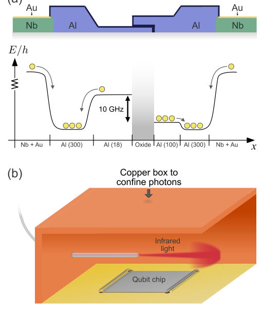
<figcaption class="paper-figure-caption"><b>Fig 1.</b> FIG. 1. Device design and optical-illumination setup. (a) Schematic of the materials near a transmon Josephson junction (top) and the corresponding QP energy landscape (bottom). Film thicknesses are not to scale. Al and AlOx are shown in light and dark blue, respectively, with Al thicknesses in nm indicated in parentheses. Quasiparticles are depicted as yellow spheres and are expected to preferentially relax into the lowest-gap Al regions, here the thick Al bandages away from the tunnel barrier. (b) Optical-illumination setup. In- frared light is guided through an optical fiber into the copper package containing the qubit chip. Reflections from the cop- per enclosure distribute the light...</figcaption>
</figure>
<figure class="paper-figure-card">
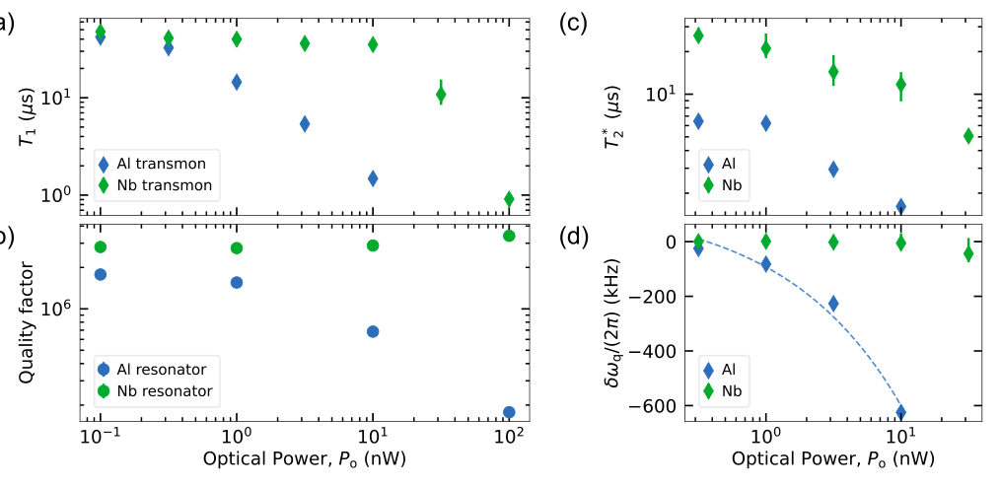
<figcaption class="paper-figure-caption"><b>Fig 2.</b> FIG. 2. Coherence and frequency response under optical illumination. (a) T1 times of the Al and Nb transmons and the Al resonator versus optical power at the fiber tip. Qubit T1 values are extracted from exponential fits to population decay traces averaged over at least 2000 repetitions. For the Nb transmon, vertical bars indicate the spread across three series of measurements performed on different days. (b) Internal quality factor for resonators made from Al and Nb. (c) Ramsey coherence time T ∗ 2 versus optical power, with both qubits operated at their maximum frequency. (d) Qubit frequency shift extracted from Ramsey measurements. The dashed curve shows a fit δωq ∝√Po, expected when the...</figcaption>
</figure>
<figure class="paper-figure-card">
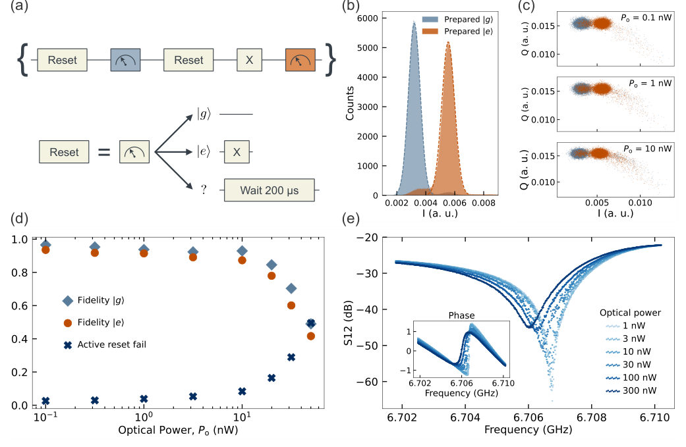
<figcaption class="paper-figure-caption"><b>Fig 3.</b> FIG. 3. Qubit readout under optical illumination. (a) Protocol for state-preparation and measurement (top) and active reset (bottom). The protocol in the curly brackets is repeated 106 times without gaps between iterations. (b) Readout distributions following reset and preparation in |g⟩or |e⟩. Dashed lines represent Gaussian fits to the distributions. (c) Distribution of the first 104 shots in the IQ plane for three different levels of optical power. The long tail at large I-quadrature values is attributed to transmon states outside the qubit manifold. (d) SPAM fidelity and fraction of resets triggered by out- of-manifold outcomes. (e) VNA response of the readout resonator coupled to the...</figcaption>
</figure>
<figure class="paper-figure-card">
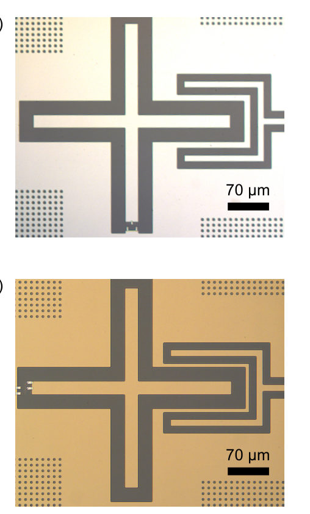
<figcaption class="paper-figure-caption"><b>Fig 4.</b> FIG. 4. Optical micrographs of (a) the Al transmon and (b) the Nb transmon in this study.</figcaption>
</figure>
<figure class="paper-figure-card">
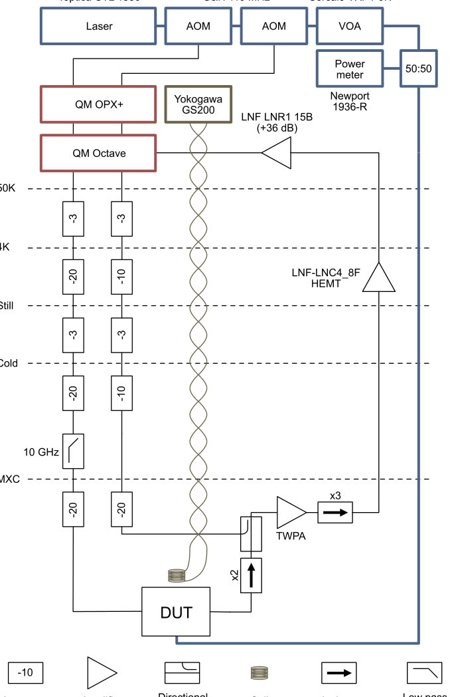
<figcaption class="paper-figure-caption"><b>Fig 5.</b> FIG. 5. Wiring diagram of the measurement setup. Baseband signals are generated by the OPX+ controller from Quantum Machines and sent to the Octave instrument hosting the LO and IQ mixers for up-conversion to microwave signals. The OPX+ is also used to control the acousto-optic modulators (AOMs) which generate optical pulses by periodically blocking the laser. The laser power is controlled by a variable optical attenuator from a separate computer. Signals from the device under test (DUT) are amplified by a traveling-wave parametric amplifier (TWPA) and a high-electron-mobility transistor (HEMT) low-noise amplifier before exiting the cryostat. Numbers on input lines represent attenuation in...</figcaption>
</figure>
</div>

<p><strong>Summary.</strong> This research addresses the vulnerability of superconducting qubits to quasiparticle poisoning from optical fields. By engineering the superconducting material's energy landscape beyond the Josephson junction, the authors developed a Niobium-based transmon that resists optical power-induced relaxation significantly better than standard aluminum devices. This demonstrates a crucial pathway for building more robust, scalable quantum processors.</p>
<p><strong>Why it may be interesting.</strong> This work directly addresses hardware limitations in superconducting quantum computing by providing an experimental method to enhance qubit coherence against environmental noise sources like optical fields, which is critical for scaling quantum processors.</p>
<details>
<summary>Detailed structure</summary>
<p><strong>Main problem.</strong> Superconducting qubits are highly susceptible to decoherence and errors caused by quasiparticle (QP) poisoning from high-energy radiation and optical fields.</p>
<p><strong>Main result.</strong> Engineering the quasiparticle energy landscape beyond the Josephson junction, using a Niobium ground plane, increased the qubit's resilience to optical power by over an order of magnitude compared to all-Aluminum devices.</p>
<p><strong>Method.</strong> The study involves fabricating and characterizing superconducting transmon qubits under varying levels of near-infrared optical illumination, measuring coherence times and frequency shifts.</p>
<p><strong>Model / system.</strong> The platform is superconducting transmon qubits, comparing an all-Aluminum (Al) device against a novel Niobium (Nb)/Au device. The engineering focuses on controlling the QP energy landscape surrounding the Josephson junctions.</p>
<p><strong>Key observables.</strong> Relaxation time ($T_1$), coherence time ($T^*$), QP-induced frequency shift ($\delta\omega_q$), and the onset of excess relaxation as a function of optical power.</p>
<p><strong>Important parameters / regimes.</strong> Near-infrared optical power ($P_o$), gap engineering parameters ($\delta\Delta$), and the material choice (Al vs. Nb).</p>
<p><strong>Assumptions / limitations.</strong> The primary assumption is that engineering the QP energy landscape can physically separate the qubit from the sources of poisoning, although dephasing remains vulnerable.</p>
<p><strong>Figures summary.</strong> Figures compare $T_1$ and $T^*$ degradation versus optical power for Al and Nb transmons, demonstrating the superior resilience of the Nb device. Simulations also model resonator quality factor ($Q$) dependence on QP sheet resistance.</p>
<p><strong>Paper structure.</strong> The paper establishes the problem of QP poisoning, details the novel Nb/Au device structure, presents comparative measurements showing enhanced resilience, and concludes that gap engineering beyond the junction is crucial for robust quantum processors.</p>
</details>
<details>
<summary>Abstract</summary>
<p>Superconducting quantum circuits underpin large-scale quantum processors and are increasingly interfaced with optical systems, yet they are vulnerable to quasiparticle poisoning from high-energy radiation and optical fields. Gap engineering of Josephson junctions suppresses quasiparticle-induced relaxation, but quasiparticles near the junction can still shift the qubit frequency and cause phase errors. Here, we extend gap engineering beyond the junction using a flux-tunable transmon with a gold-on-niobium ground plane and island and strongly gap-engineered aluminum junctions designed to keep quasiparticles away from the junction leads. Compared with an all-aluminum transmon with nominally identical junctions, we demonstrate that the niobium device withstands more than an order of magnitude higher near-infrared optical power before excess relaxation appears. The Nb transmon shows no resolvable quasiparticle-induced frequency shift over the same power range. At the same time, we observe that dephasing and state-preparation-and-measurement infidelity increase with optical power even while relaxation remains protected. These results suggest that engineering the quasiparticle energy landscape beyond the junction can substantially increase qubit resilience, not only to radiation-induced error bursts, but also to nearby optical fields.</p>
</details>
<p><sub><a href="#top">↑ back to top</a></sub></p>

<p><a id="paper-2610.11125"></a></p>
<h3 id="sub-mhz-swap-spectroscopy-of-two-level-systems-in-superconducting-qubits"><a href="http://arxiv.org/abs/2610.11125v1">Sub-MHz SWAP spectroscopy of two-level systems in superconducting qubits</a></h3>
<p><strong>Authors:</strong> Joaquin Minguzzi, John Clai Owens, Oskar Painter, Matthew H. Matheny, Loren J. Swenson<br>
<strong>Type:</strong> experiment · <strong>Category:</strong> quantum information and computing · <strong>PDF:</strong> <a href="https://arxiv.org/pdf/2610.11125v1">https://arxiv.org/pdf/2610.11125v1</a><br>
<strong>Analysis basis:</strong> full PDF text, analyzed in chunks
<strong>Topic relevance:</strong> 🔥 <code>QC/QI experiment</code> <strong>4/5</strong> · <code>correlated / nonlocal dissipation</code> <strong>1/5</strong> · <code>quantum measurements</code> <strong>1/5</strong></p>
<div class="figure-strip-hint">↔ Scroll figures horizontally</div>
<div class="paper-figures-scroll">
<figure class="paper-figure-card">
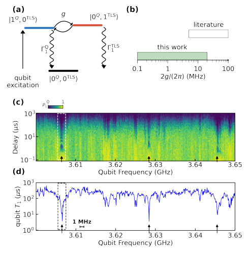
<figcaption class="paper-figure-caption"><b>Fig 1.</b> FIG. 1. TLS detection with SWAP spectroscopy. (a) Energy- level diagram for the qubit (blue) and TLS (red), showing qubit excitation, coupling g, and the qubit and TLS energy- relaxation rates ΓQ 1 and ΓTLS 1 . (b) Previous work (litera- ture) reported qubit-TLS coherent oscillations at swap rates 2g/(2π) ≳5 MHz; this work (green) extends coherent detec- tion down to 0.1 MHz. (c) Raw SWAP spectroscopy data showing the qubit excited-state population P1 (color scale) versus qubit frequency and delay (logarithmic scale). Black arrows mark Rabi chevrons from coherent TLSs. (d) Qubit T1 spectrum (logarithmic scale) from exponential-decay fits to each frequency slice of (c); the same TLSs (black...</figcaption>
</figure>
<figure class="paper-figure-card">
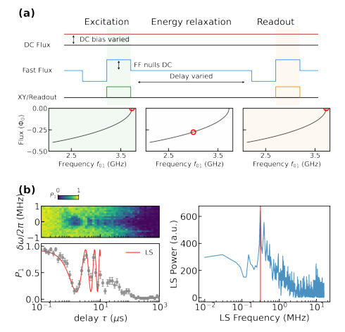
<figcaption class="paper-figure-caption"><b>Fig 2.</b> FIG. 2. Fast-flux-assisted (FFA) SWAP spectroscopy and Lomb–Scargle analysis. (a) Pulse sequence. DC flux sets the spectroscopy frequency, and two short fast flux pulses bring the qubit to its flux-insensitive sweet spot for excitation and readout. Each pulse uses net-zero shaping: an inverted half of equal area precedes the half that nulls the DC bias. The fast flux is off during the variable delays, allowing energy relaxation to be probed with sub-MHz frequency resolution over millisecond interaction times. The lower panels show the flux-to-frequency tuning curve at each stage of the FFA pulse sequence, with the qubit operating point (red circles) alternating between the sweet spot at...</figcaption>
</figure>
<figure class="paper-figure-card">
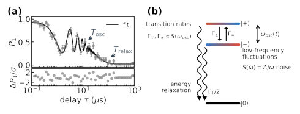
<figcaption class="paper-figure-caption"><b>Fig 3.</b> FIG. 3. Analysis of the qubit-TLS Rabi exchange dynam- ics within the dressed-state picture. (a) Fit (black curve) to the P1 time trace (grey markers) on resonance, δω = 0, of the Rabi chevron in Fig. 2(b), using a model that com- bines an oscillatory decay with decay time Tosc and a purely exponential decay with relaxation time Trelax (arrows). The strip below shows the residuals ∆P1 = P1 −P fit 1 , normalized by the per-point error bar σ. The delay τ axis is logarith- mic. (b) Dressed-state energy-level diagram of the interact- ing qubit-TLS system at the TLS resonance, δω = 0. The dressed states |±⟩, colored with opposite blue-to-red gradi- ents to indicate the equal mixing of qubit and...</figcaption>
</figure>
<figure class="paper-figure-card">
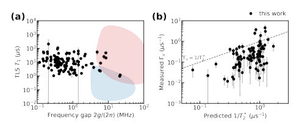
<figcaption class="paper-figure-caption"><b>Fig 4.</b> FIG. 4. Energy relaxation, decoherence and frequency gap of the qubit-TLS Rabi chevrons detected with FFA-SWAP spectroscopy. (a) TLS relaxation time T TLS 1 versus the fre- quency gap 2g/(2π) for the 118 detected TLSs. Each value is deduced from the relaxation time Trelax of the two-component fit at the TLS resonance, after subtracting the qubit contribu- tion 1/T Q 1 as described in the text. The blue and red shaded regions mark the parameter ranges of the strongly coupled TLSs reported in Ref. [18] and Ref. [14], respectively, an or- der of magnitude stronger in coupling than the TLSs detected here. (b) Dressed-gap decoherence rate Γv = Γosc −Γrelax versus the qubit Ramsey rate 1/T ∗ 2...</figcaption>
</figure>
</div>

<p><strong>Summary.</strong> This paper reports on an advanced SWAP spectroscopy technique to study TLS defects in superconducting qubits. By using fast flux pulses, the researchers achieved unprecedented sensitivity, detecting coherent TLS dynamics at very low coupling strengths. This work significantly advances the understanding of decoherence mechanisms, which is crucial for building reliable quantum computers.</p>
<p><strong>Why it may be interesting.</strong> This work provides a highly sensitive experimental platform for characterizing decoherence sources in superconducting qubits, directly impacting the feasibility and fidelity of quantum computation.</p>
<details>
<summary>Detailed structure</summary>
<p><strong>Main problem.</strong> The primary challenge is mitigating energy loss from Two-Level System (TLS) defects in superconducting qubits while achieving high-resolution spectroscopy of these defects.</p>
<p><strong>Main result.</strong> The authors successfully detected coherent TLS dynamics at swap rates as low as 0.1 MHz, revealing TLSs with a median energy-relaxation time of 10 microseconds.</p>
<p><strong>Method.</strong> They introduced a fast flux pulse sequence for SWAP spectroscopy, allowing for fine frequency resolution and long interaction times to probe weak coupling regimes.</p>
<p><strong>Model / system.</strong> The system involves flux-tunable superconducting qubits coupled to TLS defects. The dynamics are analyzed using a dressed-state picture, fitting the coherent swap oscillations to extract relaxation times.</p>
<p><strong>Key observables.</strong> Rabi chevrons, swap rates (0.1 MHz), TLS energy-relaxation time ($T_{relax}$), and swap coherence time ($T_{osc}$).</p>
<p><strong>Important parameters / regimes.</strong> Sub-MHz frequency resolution, detection of coherence at rates an order of magnitude lower than previously reported.</p>
<p><strong>Assumptions / limitations.</strong> The analysis relies on fitting the time-domain population decay ($P_1(	au)$) to a three-component model involving oscillation, relaxation, and background decay.</p>
<p><strong>Figures summary.</strong> Figures illustrate the SWAP spectroscopy technique, comparing previous detection limits ($\gtrsim 5$ MHz) to the new capability ($\downarrow 0.1$ MHz), and show the fitted time traces revealing oscillations and exponential decay.</p>
<p><strong>Paper structure.</strong> The paper progresses from introducing the problem of TLS loss to detailing the novel fast-flux pulse sequence, presenting the measurements of low-rate Rabi chevrons, and finally analyzing the extracted coherence and relaxation times.</p>
</details>
<details>
<summary>Abstract</summary>
<p>An outstanding challenge in superconducting quantum circuits is mitigating loss from two-level system (TLS) defects. SWAP spectroscopy with flux-tunable qubits can detect individual TLSs, but the Rabi chevrons that signal coherent exchange have been observed only for the most strongly coupled defects. Here, we introduce a sequence with fast flux pulses only at state preparation and readout, switched off during the energy-relaxation delay for finer frequency resolution and longer interaction times. We detect Rabi chevrons at swap rates as low as 0.1 MHz, an order of magnitude lower than previously reported. In the dressed-state picture, we fit the coherent swap oscillations to extract the TLS energy-relaxation time. These Rabi chevrons reveal coherent TLSs with a median energy-relaxation time of 10 microseconds, at coupling strengths previously associated with incoherent TLSs. The swap coherence times exceed the qubit T2* limited by flux noise, indicating that the dressed gap protects them from low-frequency 1/f noise.</p>
</details>
<p><sub><a href="#top">↑ back to top</a></sub></p>

<p><a id="paper-2610.11540"></a></p>
<h3 id="quickly-extracting-fidelity-decay-rates-in-random-circuit-benchmarking-experiments"><a href="http://arxiv.org/abs/2610.11540v1">Quickly extracting fidelity decay rates in random circuit benchmarking experiments</a></h3>
<p><strong>Authors:</strong> Ake Köhne, Stavros Efthymiou, Joanna Majsak, Jadwiga Wilkens, Bram Evert, Andrew D. Patterson, Jonas Helsen, Markus Heinrich, Ingo Roth<br>
<strong>Type:</strong> both · <strong>Category:</strong> quantum information and computing · <strong>PDF:</strong> <a href="https://arxiv.org/pdf/2610.11540v1">https://arxiv.org/pdf/2610.11540v1</a><br>
<strong>Analysis basis:</strong> full PDF text, analyzed in chunks
<strong>Topic relevance:</strong> 🔥 <code>QC/QI experiment</code> <strong>4/5</strong> · <code>quantum measurements</code> <strong>1/5</strong></p>
<div class="figure-strip-hint">↔ Scroll figures horizontally</div>
<div class="paper-figures-scroll">
<figure class="paper-figure-card">
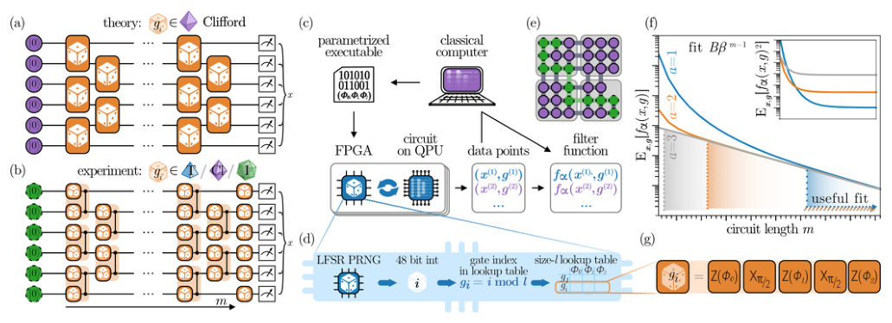
<figcaption class="paper-figure-caption"><b>Fig 1.</b> Figure 1. Overview of setup. (a) Circuits used in simulations. Each random circuit instance g is constructed from a brickwork pattern of m layers of 2-qubit Clifford gates. (b) Circuits used in experiments. Each 2-qubit gate from (a) is now a layer of 1–qubit gates, each sampled from the ensemble (tetrahedral, Clifford or icosahedral), followed by a CZ gate. The last layer is followed by a layer of 1–qubit random gates. (c) Steps of the experiment exploiting on-chip randomness. The classical computer prepares a program where each random gate is parametrized by three angles ϕ0, ϕ1, ϕ2. The parametrized executable is uploaded to the FPGA, where the angles are randomly sampled. The FPGA sends...</figcaption>
</figure>
<figure class="paper-figure-card">
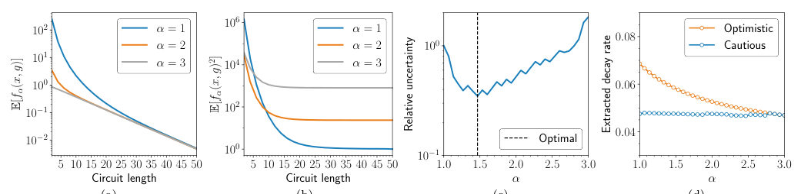
<figcaption class="paper-figure-caption"><b>Fig 2.</b> Figure 2. Numerical evaluation of filtered RB for an open 1D brickwork circuit on 30 qubits, with local two-qubit Clifford gates interspersed with identical single-qubit depolarizing noise. The moments are evaluated exactly using local applications of Weingarten calculus and tensor-network contractions, as detailed in Appendix C. (a) Filtered RB signals, showing the reduction of the transient regime with increasing α and the nearly single-exponential decay of the trace filter α = 3. (b) Corresponding second moments. (c) Uncertainty of the decay-parameter estimate, normalized by the uncertainty for α = 1, showing an optimal value of around α = 1.5 for this setting. (d) Decay values extracted...</figcaption>
</figure>
<figure class="paper-figure-card">
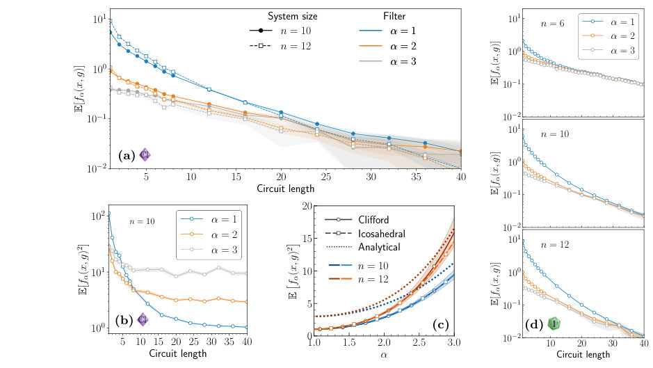
<figcaption class="paper-figure-caption"><b>Fig 3.</b> Figure 3. Randomized benchmarking experiments performed on the Cepheus-1-36Q Rigetti device. We use random circuits as described in Figure 1b and show results for both the Clifford ensemble and the icosahedral ensemble. For n = 6, m ∈{1 . . . 40} and for n = 10/12 we have m ∈{1, 2, 3, 4, 5, 6, 7, 8, 12, 16, 20, 24, 28, 32, 36, 40}. For the number of circuits and shots, refer to Table I. Uncertainties are estimated using bootstrapping procedures and shaded areas represent 95%-uncertainty intervals. In panel (a) we show the first moments using the Clifford ensemble and in panel (b) we show the corresponding second moments for n = 10. In panel (c), we compare the estimated second moments for...</figcaption>
</figure>
<figure class="paper-figure-card">
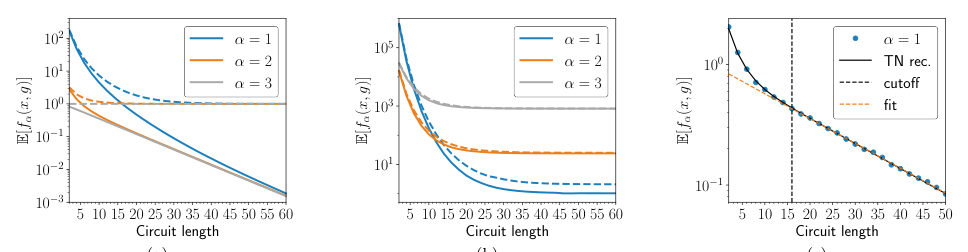
<figcaption class="paper-figure-caption"><b>Fig 4.</b> Figure 4. Estimating the mixing length in practice. First (a) and second (b) moments of the RB signal for a brickwork circuit of the same construction as described in Figure 1b with the Clifford ensemble and n = 20. We show results for noiseless circuits (dashed line) and circuits where each brickwork is followed by single qubit depolarizing noise (p = 7.5 · 10−3) on each qubit (continuous line). (c) The cautious fitting approach applied to the 6-qubit RB data obtained on the emulator of IBM Guadalupe, the same data as discussed in Figure 7. The cutoff is estimated by the TN-based reconstruction method. A single exponential is fitted through the data in the fitting interval.</figcaption>
</figure>
<figure class="paper-figure-card">
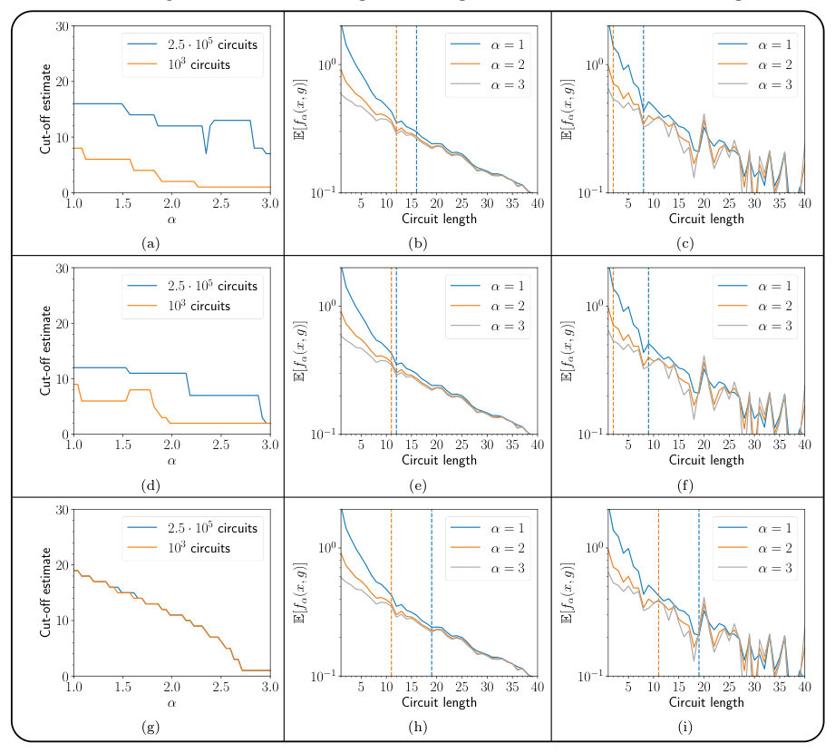
<figcaption class="paper-figure-caption"><b>Fig 5.</b> Figure 5. Comparison of different methods to determine the cutoff point. For each method, we show the results when applied to two different RB curves. The RB curves originate from the 6-qubit Rigetti experiment with the icosahedral ensemble described in the main text. We use the results from both an experiment with 2.5 · 105 circuits per sequence length and from an experiment with 103 circuits per sequence length to investigate the robustness of the different methods. In panels (a,d,g), we show how the cutoff points depend on the filter function. In panels (b,e,h) we visualize the cutoff points for α = 1 and α = 2 for the experiment with 2.5 · 105 circuits and we do the same in panels...</figcaption>
</figure>
</div>

<p><strong>Summary.</strong> This paper presents a new classical post-processing technique, the trace filter function, to overcome systematic biases in randomized benchmarking measurements. By suppressing transient decay modes, the method allows for accurate extraction of fidelity decay rates even when experimental circuits are too short for standard estimators to converge. This significantly extends the reliable characterization window for quantum hardware performance.</p>
<p><strong>Why it may be interesting.</strong> This work provides a crucial algorithmic tool for characterizing decoherence in near-term quantum hardware, directly impacting the ability to benchmark quantum processors against theoretical limits.</p>
<details>
<summary>Detailed structure</summary>
<p><strong>Main problem.</strong> The paper addresses the challenge of obtaining accurate, unbiased estimates of fidelity decay rates from randomized benchmarking (RB) experiments when transient modes bias standard short-depth measurements.</p>
<p><strong>Main result.</strong> A novel 'trace filter function' post-processing technique is introduced that provably suppresses these transient modes, enabling reliable fidelity characterization at circuit depths inaccessible to conventional estimators.</p>
<p><strong>Method.</strong> The authors develop and analyze a one-parameter family of estimators, culminating in the trace filter function, which is applied to the measured expectation values from random circuits.</p>
<p><strong>Model / system.</strong> The work is validated using experiments on a superconducting processor (Rigetti) for one-dimensional circuits up to 12 qubits, utilizing random Clifford circuits generated via brickwork patterns.</p>
<p><strong>Key observables.</strong> Fidelity decay rate ($eta$), transient modes, and the variance of the estimators.</p>
<p><strong>Important parameters / regimes.</strong> The filter parameter $\alpha$, the circuit depth ($m$), and the qubit number ($n$).</p>
<p><strong>Assumptions / limitations.</strong> Assumptions include time-stationary Markovian gate-dependent noise and local-symmetry assumptions for the noise model.</p>
<p><strong>Figures summary.</strong> Figures illustrate the experimental setup (simulated and physical circuits), the comparison of different methods for determining the mixing length, and the theoretical scaling of moment calculations.</p>
<p><strong>Paper structure.</strong> The paper progresses from identifying the bias caused by transient modes in RB, introducing the interpolating estimator family, deriving the theoretical properties of the trace filter function (including its efficiency for local circuits), and validating the method with superconducting hardware experiments.</p>
</details>
<details>
<summary>Abstract</summary>
<p>Randomized benchmarking (RB) with structured circuits is experimentally scalable, but gives biased short-depth fidelity estimates because incomplete ensemble mixing introduces transient modes. Waiting for these transients to decay in deeper circuits can push the signal below the noise floor. This is a well-established obstacle, e.g. in linear cross-entropy benchmarking (LinXEB). Here we overcome this obstacle solely through classical post-processing. We introduce a one-parameter family of estimators that interpolate between the standard LinXEB-type post-processing and a new post-processing technique we call the trace filter function. Under practical assumptions, the trace filter function provably suppresses transient modes, exposing an interpretable fidelity decay at short depth, with theoretical guarantees comparable to standard RB, at the cost of an increased variance. We bound the variance, analyze the evaluation complexity of the new estimators, and develop practical post-processing algorithms. Experiments on a Rigetti superconducting processor validate the method for one-dimensional circuits of up to 12 qubits: where the standard estimator requires depth beyond a 40-layer experimental window, the trace filter function yields consistent estimates below 10 layers. Trace-filtered randomized benchmarking therefore extends reliable fidelity characterization to relevant structured circuit ensembles and short-depth regimes that are inaccessible to conventional estimators.</p>
</details>
<p><sub><a href="#top">↑ back to top</a></sub></p>

<p><a id="paper-2610.12314"></a></p>
<h3 id="residual-guided-global-drive-design-in-trapped-ion-quantum-simulators"><a href="http://arxiv.org/abs/2610.12314v1">Residual-Guided Global-Drive Design in Trapped-Ion Quantum Simulators</a></h3>
<p><strong>Authors:</strong> Yuanjing Zhang, Zewen Zhang<br>
<strong>Type:</strong> theory · <strong>Category:</strong> other · <strong>PDF:</strong> <a href="https://arxiv.org/pdf/2610.12314v1">https://arxiv.org/pdf/2610.12314v1</a><br>
<strong>Analysis basis:</strong> full PDF text, analyzed in chunks
<strong>Topic relevance:</strong> 🔥 <code>analog quantum simulation</code> <strong>4/5</strong> · <code>QC/QI experiment</code> <strong>1/5</strong></p>
<div class="figure-strip-hint">↔ Scroll figures horizontally</div>
<div class="paper-figures-scroll">
<figure class="paper-figure-card">
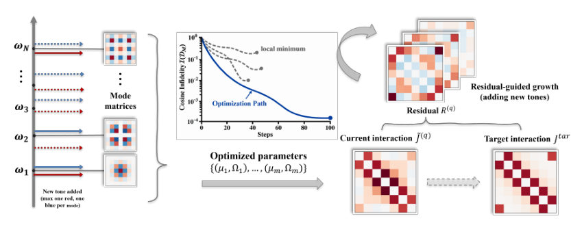
<figcaption class="paper-figure-caption"><b>Fig 1.</b> Figure 1. Schematic workflow of global-drive Hamiltonian design using the residual-guided protocol. The left panel illustrates the procedure of selecting a subset of candidate tones from the mode spectrum, where solid arrows denote the chosen tones and dashed arrows mark the remaining tones in the pool. The selected tones are then used to synthesize the target Hamiltonian, with their µm and Ωm optimized toward the lowest infidelity achievable at the current step. As indicated in the right panel, the number of chosen tones increases along a residual-guided track and eventually reaches the tolerated infidelity. Although each tone’s detuning is constrained to remain sufficiently large, a...</figcaption>
</figure>
<figure class="paper-figure-card">
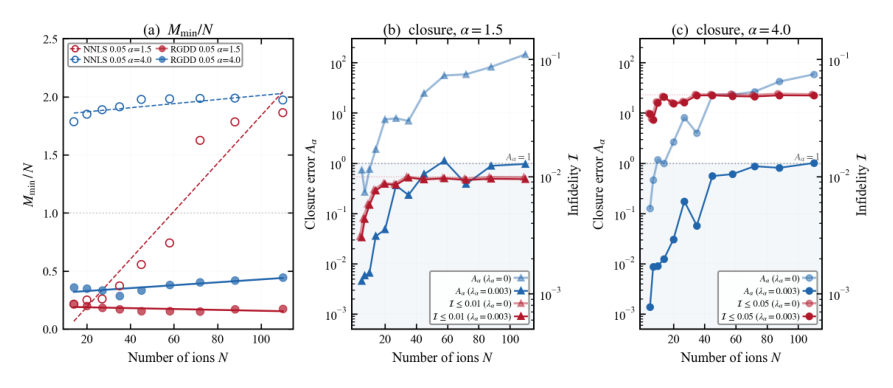
<figcaption class="paper-figure-caption"><b>Fig 2.</b> Figure 2. Tone-count scaling, infidelity, and estimate of closure error for power-law targets. (a) Number of tones per ion Mmin/N versus ion number N for α = 1.5 (red) and α = 4.0 (blue) at the fidelity threshold I ≤0.05. Open markers with dashed lines: fixed-frequency NNLS baseline; filled markers with solid lines: RGDD results. The lines are linear fits. (b) and (c) Closure error Aα (left axis, blue) and infidelity I (right axis, red) versus N for α = 1.5 and α = 4.0, respectively. Light markers: unpenalized solutions (λα = 0); dark markers: closure-aware optimization (λα = 0.003). Infidelity curves in (b) and (c) are slightly offset for visibility.</figcaption>
</figure>
<figure class="paper-figure-card">
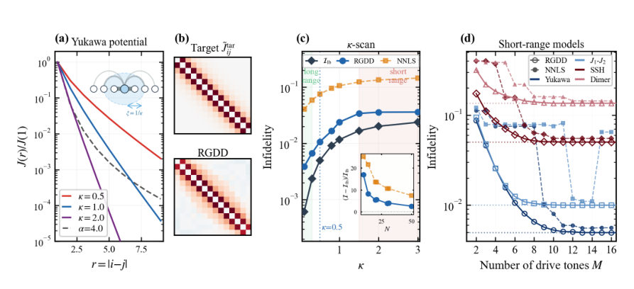
<figcaption class="paper-figure-caption"><b>Fig 3.</b> Figure 3. (a) Yukawa interaction decay J(r)/J(1) for screening parameters κ = 0.5, 1.0, and 2.0, along with the power-law interaction with α = 4.0 for reference. Inset: schematic of Yukawa interactions with the screening cloud of extent ξ = 1/κ, where the bond width denotes the assigned weights. (b) Target ˜Jtar ij and the RGDD-achieved interaction matrix for κ = 0.5 with 14 global drives. (c) Infidelity versus κ at fixed M = 6: theoretical lower bound Ilb (diamonds), RGDD results (circles), and NNLS results (squares). Inset: relative gap (I −Ilb)/Ilb versus ion number N at κ = 0.5, M ≈0.2N. (d) Infidelity versus tone count M for four short-range targets at N = 14. Open markers and solid...</figcaption>
</figure>
<figure class="paper-figure-card">
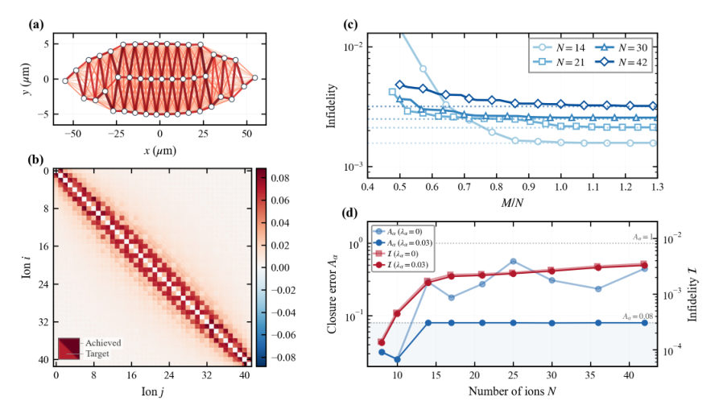
<figcaption class="paper-figure-caption"><b>Fig 4.</b> Figure 4. (a) Target interaction Jtar ij ∝|ri −rj|−1.5 visualized as bonds on the 2D ion crystal (N = 42). Brightness and thickness reflect the coupling strength. (b) Split-cell interaction matrix for N = 42: the bottom-left triangles show the target ˜Jtar ij and the top-right triangles show the optimized ˜Jij at the lowest infidelity achieved with RGDD. (c) Infidelity I versus average tone count M/N for various N. Horizontal dotted lines mark the theoretical lower bound Ilb. (d) Closure error Aα (left axis, blue) and infidelity I (right axis, red) versus N at the optimized settings. Light markers: solutions with λα = 0. Dark markers: closure-aware optimization with λα = 0.03. Infidelity...</figcaption>
</figure>
<figure class="paper-figure-card">
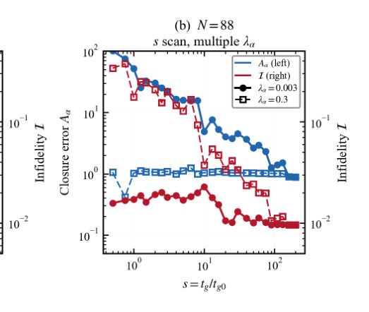
<figcaption class="paper-figure-caption"><b>Fig 5.</b> Figure 5. Closure error Aα (left axis) and infidelity I (right axis) versus gate time ratio s = tg/tg0. Circles: λα = 0.003 (value used in the main text). Squares: λα = 0.3. (a) N = 45, (b) N = 88.</figcaption>
</figure>
</div>

<p><strong>Summary.</strong> This paper presents Residual-Guided Drive Design (RGDD), a novel optimization protocol for engineering arbitrary interaction graphs in trapped-ion quantum simulators. RGDD iteratively adds laser tones to synthesize a target Hamiltonian while minimizing infidelity and controlling motional excitation errors. This scalable framework significantly expands the programmable capabilities of trapped-ion quantum computing platforms.</p>
<p><strong>Why it may be interesting.</strong> This work directly addresses the engineering challenge of controlling complex many-body interactions in trapped ions, providing a scalable, systematic method for designing the required laser fields.</p>
<details>
<summary>Detailed structure</summary>
<p><strong>Main problem.</strong> The central challenge is designing a compact set of global drive spectra to synthesize a target interaction Hamiltonian in trapped-ion quantum simulators with high fidelity.</p>
<p><strong>Main result.</strong> The Residual-Guided Drive Design (RGDD) protocol systematically achieves near-theoretical fidelity bounds using a number of laser tones that scales nearly linearly with system size.</p>
<p><strong>Method.</strong> RGDD is an incremental optimization strategy that iteratively adds global laser tones, guided by the residual error, to minimize the cosine infidelity between the synthesized and target interaction.</p>
<p><strong>Model / system.</strong> The system is trapped-ion quantum simulators, where interactions are modeled using long-range Ising-type Hamiltonians generated by multi-tone global drive laser fields.</p>
<p><strong>Key observables.</strong> Cosine infidelity ($I$), minimum number of tones ($M_{min}$), and residual motional excitation ($\alpha_k$).</p>
<p><strong>Important parameters / regimes.</strong> Gate time ($t_g$), penalty coefficient ($\lambda_a$), and the ratio of gate time to baseline time ($s = t_g/t_{g0}$).</p>
<p><strong>Assumptions / limitations.</strong> The accessible interaction space is fundamentally constrained by the native motional modes of the ion crystal.</p>
<p><strong>Figures summary.</strong> Figures compare tone-count scaling (RGDD vs. NNLS) and closure error across different power-law targets; Figure 6 compares infidelity vs. tone count for RGDD versus equal-spacing placement.</p>
<p><strong>Paper structure.</strong> The paper introduces the RGDD protocol, details the optimization objective incorporating a closure penalty, and then analyzes its performance by comparing it against baseline methods (like NNLS) and by investigating the trade-off between infidelity and closure error as a function of gate time.</p>
</details>
<details>
<summary>Abstract</summary>
<p>Trapped-ion quantum simulators are powerful platforms for exploring many-body physics, yet engineering of arbitrary interaction graphs remains a central challenge. To leverage the intrinsic structure of native motional modes and thereby enhance programmability, a residual-guided optimization protocol is introduced for the systematic design of multi-tone global drive spectra. While the achievable interaction fidelity is fundamentally bounded by the available motional modes, this adaptive strategy converges on the theoretical limit using a number of laser tones that scales nearly linearly with system size. The versatility of this method enables the synthesis of both long-range and traditionally difficult short-range coupling topologies. Additionally, by incorporating a penalty for residual motional excitation, the algorithm effectively mitigates errors associated with incomplete closure of phase-space trajectories. Overall, this scalable framework significantly expands the programmable capabilities of trapped-ion architectures while maintaining low computational overhead and high potential for experimental implementation.</p>
</details>
<p><sub><a href="#top">↑ back to top</a></sub></p>

<p><a id="paper-2610.11658"></a></p>
<h3 id="error-corrected-memory-and-logic-on-a-heavy-hex-superconducting-qubit-processor"><a href="http://arxiv.org/abs/2610.11658v1">Error-Corrected Memory and Logic on a Heavy-Hex Superconducting-Qubit Processor</a></h3>
<p><strong>Authors:</strong> Campbell K. McLauchlan, Georgia M. Nixon, Julien M. Drouet, Xanda C. Kolesnikow, Seok-Hyung Lee, James Raftery, Karthik Siva, Stephen D. Bartlett, Benjamin J. Brown, Robin Harper<br>
<strong>Type:</strong> experiment · <strong>Category:</strong> quantum information and computing · <strong>PDF:</strong> <a href="https://arxiv.org/pdf/2610.11658v1">https://arxiv.org/pdf/2610.11658v1</a><br>
<strong>Analysis basis:</strong> full PDF text, analyzed in chunks
<strong>Topic relevance:</strong> 🔥 <code>QC/QI experiment</code> <strong>4/5</strong></p>
<div class="figure-strip-hint">↔ Scroll figures horizontally</div>
<div class="paper-figures-scroll">
<figure class="paper-figure-card">
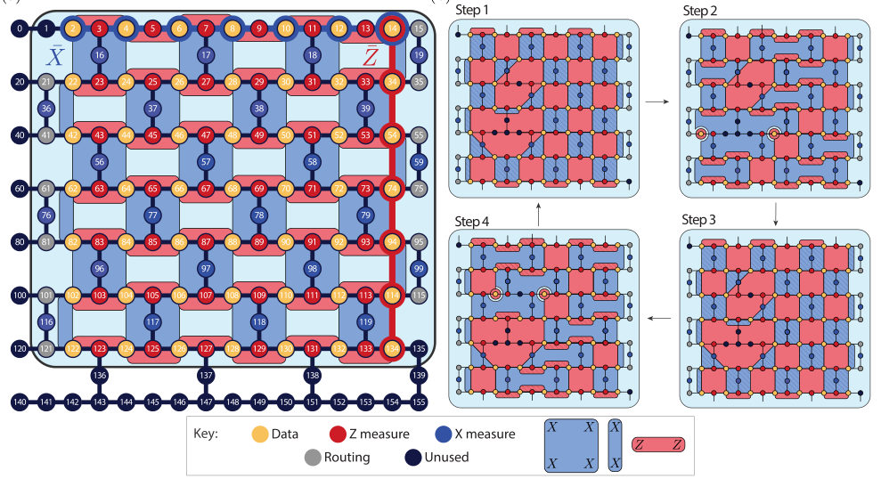
<figcaption class="paper-figure-caption"><b>Fig 1.</b> FIG. 1. Dynamic compass code on the 156-qubit quantum processor ibm boston. (a) Arrangement of qubits and couplers on ibm boston, with the layout of the 7 × 7 dynamic compass code shown. Data qubits are shown in yellow, Z and X measure qubits in red and blue respectively, and qubits used only for routing and flag information in gray. The Z (X) checks of the code are shown with red (blue) plaquettes. The Z (X) logical operator of the code is shown with a red (blue) string and rings. The code arises from a four-step sequence of check operator measurements. (b) Syndrome extraction schedule of the dynamic compass code with underperforming qubits 85 and 46 excluded. In each step, shaded checks...</figcaption>
</figure>
<figure class="paper-figure-card">
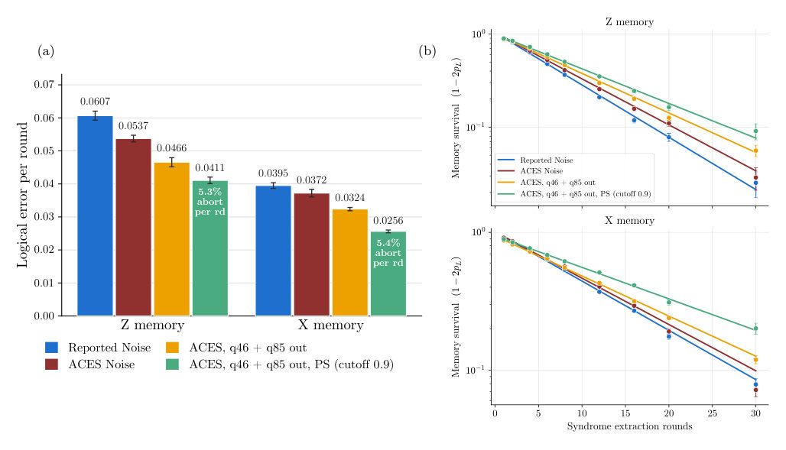
<figcaption class="paper-figure-caption"><b>Fig 2.</b> FIG. 2. Memory experiments for 7 × 7 dynamic compass code. Results of memory experiments performed in both Pauli Z and X bases, comparing the improvements from decoder, code and post-selection modifications. (a) Logical errors per round for four different noise-informed strategies, reported in detail in Table II. First, we inform a BeliefMatching decoder with generic, IBM-reported noise information (blue data). We use this information to construct a Pauli error model (see Section IV A) that sets the prior probabilities in the belief propagation step. We compare this to a decoder that is provided ACES noise information (red data). The improved logical error probabilities indicate ACES offers...</figcaption>
</figure>
<figure class="paper-figure-card">
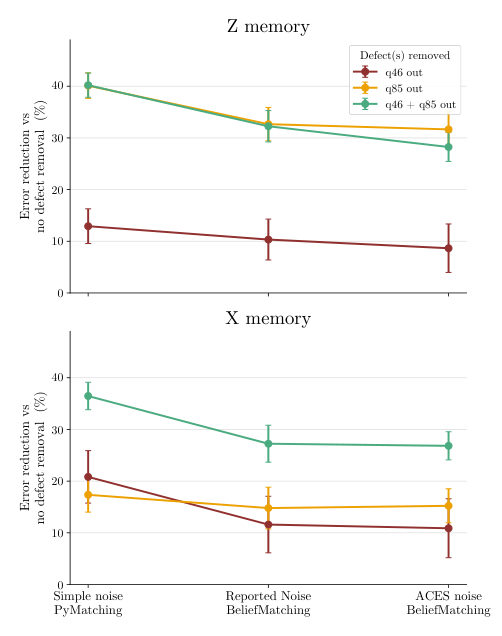
<figcaption class="paper-figure-caption"><b>Fig 3.</b> FIG. 3. Defect exclusion and decoding strategies. We compare excluding no defects, excluding qubit 85, excluding qubit 46, or excluding both (this patch is shown in Fig. 1). We also compare three different decoders: PyMatching with a simple uniform noise model, BeliefMatching with a reported noise model, and BeliefMatching with an ACES-informed noise model. Even with better noise information and more accurate decoders, the gains of defect exclusion remain pro- nounced. We plot the percentage reduction in logical error per round compared to no defect-mitigation for the three de- fect exclusion choices and three decoders. Data was collected on 2026/05/02.</figcaption>
</figure>
<figure class="paper-figure-card">
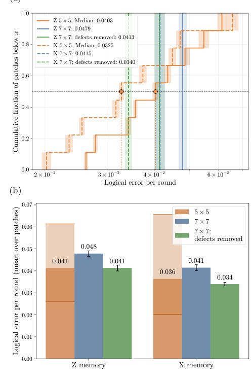
<figcaption class="paper-figure-caption"><b>Fig 4.</b> FIG. 4. Scaling memory experiments. We show the logi- cal error per round for 5 × 5 and 7 × 7 codes, the latter both with and without defect mitigation. We use a BeliefMatching decoder and ACES noise information for all decoding. (a) Cu- mulative distributions of logical error per round, in Z and X memory, for nine 5×5-sized codes covering the footprint of the 7×7 patch. Median logical errors are highlighted with orange circles. We mark the logical error of 7 × 7 patches both with (green) and without (blue) defect mitigation, in both bases. Shaded regions indicate the uncertainty of that patch’s log- ical error per round. (b) Comparison of mean logical error over patches of size 5 × 5 and 7...</figcaption>
</figure>
<figure class="paper-figure-card">
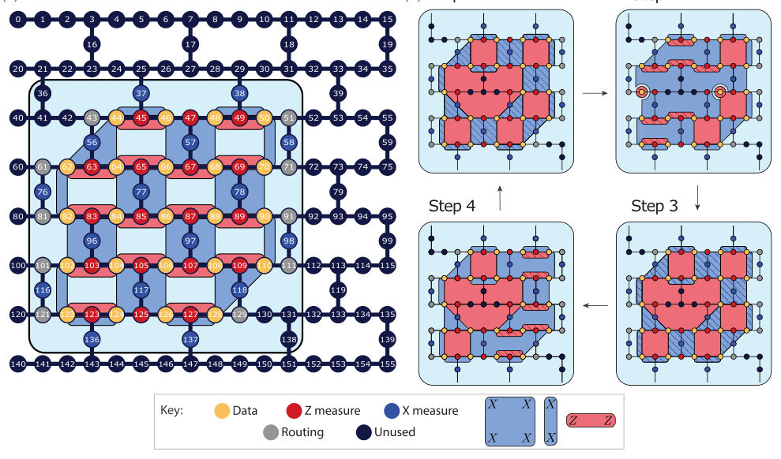
<figcaption class="paper-figure-caption"><b>Fig 5.</b> FIG. 5. Stability experiment for the dynamic compass code on ibm boston. (a) We perform stability experiments using the 5× 5-sized patch shown in its location on the device. The qubit color conventions are the same as those used in Fig. 1. The product of X checks in any time step across the entire patch evaluates to +1 in the absence of noise. (b) We perform defect exclusion using the same methods as in memory experiments (see Section IV). Once excluding defective components around qubit 85 (excluded qubits shown in black), the period-4 measurement sequence is shown, with unshaded blue/red plaquettes indicating the X/Z members of the instantaneous stabilizer group, respectively. Shaded...</figcaption>
</figure>
</div>

<p><strong>Summary.</strong> This paper reports on advanced error correction techniques applied to a large superconducting quantum processor. The researchers successfully implemented the dynamic compass code while actively compensating for hardware imperfections like underperforming qubits. By using noise-informed decoding and defect mitigation, they demonstrated that high-fidelity fault-tolerant memory and logic operations are achievable on monolithic, imperfect quantum chips.</p>
<p><strong>Why it may be interesting.</strong> This work provides a concrete, hardware-aware roadmap for scaling quantum computation by directly addressing the practical limitations of superconducting chip fabrication, which is highly relevant to experimental quantum information scientists.</p>
<details>
<summary>Detailed structure</summary>
<p><strong>Main problem.</strong> The primary challenge is achieving high-fidelity, fault-tolerant quantum computation and memory using superconducting qubits while accommodating unavoidable component heterogeneity.</p>
<p><strong>Main result.</strong> The authors demonstrated that by combining noise-informed decoding, defect exclusion, and leakage post-selection, they maintained high performance, achieving logical error probabilities improvements of up to 35% and Bell fidelities above 97% for lattice surgery.</p>
<p><strong>Method.</strong> They employed advanced noise-informed quantum error correction strategies, including using ACES-derived Pauli noise models and implementing defect exclusion and leakage pre-selection filtering.</p>
<p><strong>Model / system.</strong> The work is performed on a superconducting-qubit processor with 156 qubits arranged on a heavy-hexagonal lattice, utilizing the dynamic compass code for error correction.</p>
<p><strong>Key observables.</strong> Logical error probabilities (for memory), failure probability (for stability), and Bell fidelities (for lattice surgery).</p>
<p><strong>Important parameters / regimes.</strong> The performance improvements are quantified relative to baseline measurements, showing gains up to 56% in stability experiments.</p>
<p><strong>Assumptions / limitations.</strong> The performance gains rely on the successful combination of multiple advanced noise-informed quantum error correction strategies to mitigate component imperfections.</p>
<p><strong>Figures summary.</strong> Figure 1 illustrates the dynamic compass code layout on the 156-qubit processor, detailing the syndrome extraction schedule and how underperforming qubits are excluded.</p>
<p><strong>Paper structure.</strong> The paper details the implementation of the dynamic compass code on the physical hardware, presents results comparing various noise-informed decoding strategies (including defect exclusion and leakage post-selection), and demonstrates high-fidelity operations like lattice surgery.</p>
</details>
<details>
<summary>Abstract</summary>
<p>Large quantum computations require high-fidelity error-corrected memory and fault-tolerant logical operations. To achieve these with superconducting circuits, quantum processors will need many components operating with low error rates. In practice, fabrication of monolithic superconducting devices produces unavoidable heterogeneity in component performance, which the quantum computer must accommodate. We implement strategies to operate a large dynamic compass code on an array of 156 superconducting qubits arranged on a heavy-hexagonal lattice, making use of the entire monolithic quantum processor and redesigning our measurement schedule to exclude underperforming components. We demonstrate improvements of up to $35\%$ in logical error probabilities for a memory experiment by using a noise-informed decoder combined with strategies to exclude the worst-performing qubits and couplers, along with post-selecting on shots with a low probability of leakage errors. In addition to these memory results, we also observe performance gains of up to $56\%$ when these strategies are applied to measurement-based logic, demonstrated by stability experiments. We furthermore demonstrate high-fidelity fault-tolerant logic through lattice surgery. Through pre-selection filtering techniques, we can obtain Bell fidelities above $77\%$, and further logical gap post-selection using exclusive decoding increases these fidelities to above $97\%$. Our experiments demonstrate that high performance can be maintained in key elements of fault-tolerant quantum memory and logic when working on monolithic superconducting quantum processors with underperforming components, by using a suite of noise-informed quantum error correction strategies.</p>
</details>
<p><sub><a href="#top">↑ back to top</a></sub></p>

<p><a id="paper-2610.11495"></a></p>
<h3 id="topological-superradiant-universality-classes-in-cavity-mediated-spin-chains"><a href="http://arxiv.org/abs/2610.11495v1">Topological Superradiant Universality Classes in Cavity-Mediated Spin Chains</a></h3>
<p><strong>Authors:</strong> Yunhao Liu, Sheng Yang, Mingyuan Chen, Xue-Jia Yu<br>
<strong>Type:</strong> theory · <strong>Category:</strong> statistical mechanics · <strong>PDF:</strong> <a href="https://arxiv.org/pdf/2610.11495v1">https://arxiv.org/pdf/2610.11495v1</a><br>
<strong>Analysis basis:</strong> full PDF text, analyzed in chunks
<strong>Topic relevance:</strong> <code>Dicke superradiance</code> <strong>3/5</strong> · <code>Tavis-Cummings &amp; cavity-many-emitter</code> <strong>3/5</strong> · <code>analog quantum simulation</code> <strong>3/5</strong> · <code>correlated / nonlocal dissipation</code> <strong>3/5</strong> · <code>driven-dissipative phase transition</code> <strong>3/5</strong> · <code>methods for driven-dissipative</code> <strong>3/5</strong> · <code>non-equilibrium universality</code> <strong>3/5</strong> · <code>superradiant laser</code> <strong>2/5</strong></p>
<div class="figure-strip-hint">↔ Scroll figures horizontally</div>
<div class="paper-figures-scroll">
<figure class="paper-figure-card">
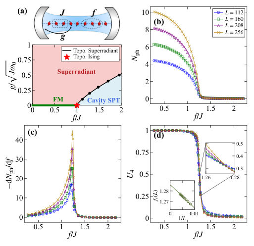
<figcaption class="paper-figure-caption"><b>Fig 1.</b> FIG. 1. (a) Schematic of a cavity mode coupled to a cluster- Ising spin chain and the corresponding global ground-state phase diagram, featuring FM, superradiant, and cavity SPT phases. The red star and black line denote the topologi- cal Ising critical point and topological superradiant critical line, respectively. For g/√Jω0 = 0.2, (b) photon occupa- tion number Nph = ⟨a†a⟩and (c) its derivative with respect to f as functions of f for various system sizes. (d) Binder cumulant of the x-component of the spin magnetization as a function of f for various system sizes. The crossing of the curves locates the corresponding finite-size critical points fc(L). The inset shows the scaling of the...</figcaption>
</figure>
<figure class="paper-figure-card">
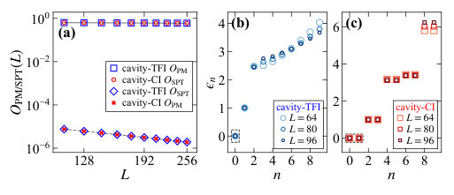
<figcaption class="paper-figure-caption"><b>Fig 2.</b> FIG. 3. (a) Largest-distance (L/2) SPT and PM string or- der parameters as functions of the system size L at the cavity transverse-field Ising (cavity-TFI) and the cavity cluster-Ising (cavity-CI) superradiant QCP, respectively, for g/√Jω0 = 0.2, plotted on a log-log scale. Solid and dashed lines de- note power-law fits. Many-body energy spectra {ϵn} for L = 64, 80, 96 under OBC at the cavity-TFI (b) and cavity- CI (c) superradiant QCPs, with g/√Jω0 = 0.2 . The en- ergy spectra are rescaled as ϵn = (En −E0)/(E1 −E0) and ϵn = (En −E0)/(E2 −E0), respectively, in (b) and (c).</figcaption>
</figure>
<figure class="paper-figure-card">
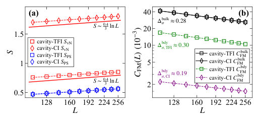
<figcaption class="paper-figure-caption"><b>Fig 3.</b> FIG. 2. (a) Finite-size scaling of the entanglement entropies of the spin (SvN, red) and photon-spin (SPS, blue) sectors at the cavity transverse-field Ising (cavity-TFI, squares) and the cavity cluster-Ising (cavity-CI, diamonds) superradiant QCPs for g/√Jω0 = 0.2 . The two red solid lines are guides to the eye for ceff = 0.4 . (b) The largest-distance (L/2) bulk-bulk and bulk-boundary connected spin correlations as functions of the system size L at the two QCPs shown in (a), plotted on a log-log scale. Solid and dashed lines denote power-law fits.</figcaption>
</figure>
<figure class="paper-figure-card">
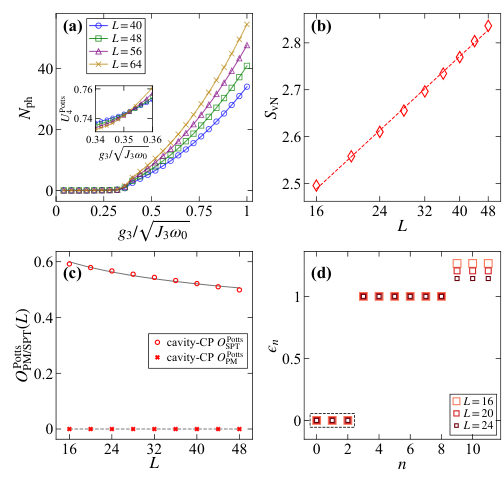
<figcaption class="paper-figure-caption"><b>Fig 4.</b> FIG. 4. For fixed f3/J3 = 1.2: (a) Photon occupation number as a function of g3 for various system sizes, showing the cavity cluster-Potts superradiant transition upon tuning g3. The inset shows the crossing of the qutrit Binder cumulant, which determines the critical point at g3/√J3ω0 ≈0.353 . At the corresponding QCP, (b) finite-size scaling of the entanglement entropy SvN, (c) largest-distance (L/2) Z3 SPT and PM string operators as functions of the system size L, and (d) the OBC many-body energy spectrum for various system sizes L. Here, L denotes the number of unit cells throughout the figure. The energy levels are rescaled as ϵn = (En −E0)/(E3 −E0) in (d).</figcaption>
</figure>
</div>

<p><strong>Summary.</strong> This work characterizes a novel class of topologically distinct superradiant quantum critical points in cavity-mediated spin chains. By analyzing edge degeneracies and comparing bulk versus boundary critical behavior, the authors prove that this criticality is fundamentally different from conventional transitions. This has implications for understanding topological order in open quantum systems.</p>
<p><strong>Why it may be interesting.</strong> It bridges concepts from quantum optics (superradiance) with topological quantum matter, showing how topological invariants can characterize critical points in open quantum systems.</p>
<details>
<summary>Detailed structure</summary>
<p><strong>Main problem.</strong> To investigate if superradiant phase transitions can exhibit topological universality classes distinct from conventional light-matter coupled systems.</p>
<p><strong>Main result.</strong> The critical line separating the superradiant phase from the cavity topological phase is topologically nontrivial, evidenced by robust symmetry-protected edge degeneracies, and this criticality is generic for cluster-qudit chains.</p>
<p><strong>Method.</strong> Numerical simulations, including Finite-size Density-Matrix Renormalization Group (DMRG) and analysis of entanglement entropies and energy spectra.</p>
<p><strong>Model / system.</strong> The study uses cavity-mediated cluster-Ising chains (and generalizes to cluster-qudit chains) coupled to a single photon mode, described by a specific Hamiltonian involving cavity and spin interactions.</p>
<p><strong>Key observables.</strong> Photon occupation number, entanglement entropies ($S_{	ext{spin}}$, $S_{	ext{photon-spin}}$), Binder cumulant, and boundary/bulk spin correlations.</p>
<p><strong>Important parameters / regimes.</strong> Coupling strengths ($g, J, f$), photon frequency ($\omega_0$), and system size ($L$).</p>
<p><strong>Assumptions / limitations.</strong> The analysis relies on comparing bulk critical properties with boundary/edge properties to diagnose topological differences.</p>
<p><strong>Figures summary.</strong> Figures illustrate phase diagrams showing three distinct phases (FM, Superradiant, SPT), and show finite-size scaling of entanglement entropies and correlation functions confirming topological differences between models.</p>
<p><strong>Paper structure.</strong> The paper systematically analyzes the phase diagram, using DMRG and finite-size scaling to distinguish between topologically trivial and non-trivial critical points in the superradiant transition.</p>
</details>
<details>
<summary>Abstract</summary>
<p>Superradiant phase transitions are fundamental phenomena in light-matter coupled systems. Here, we uncover a novel class of superradiant criticality that is topologically distinct from previously known superradiant transitions. Using cavity-mediated cluster-Ising chains as an illustrative example, we numerically demonstrate that the critical line separating the superradiant phase from the cavity topological phase hosts robust symmetry-protected edge degeneracies, a feature absent in conventional superradiant transitions. Remarkably, although its local bulk critical properties are indistinguishable from those of the previously identified topologically trivial superradiant transition, the two criticalities cannot be smoothly connected without breaking the protecting symmetries or passing through a multicritical point. We further show that such topological superradiant criticality is generic, also occurring in cavity-mediated $\mathbb{Z}_{n}^{}$ cluster-qudit chains, as supported by complementary lattice simulations.</p>
</details>
<p><sub><a href="#top">↑ back to top</a></sub></p>

<p><a id="paper-2610.11607"></a></p>
<h3 id="remote-nonreciprocal-magnon-magnon-entanglement-via-the-barnett-effect-with-coherent-feedback"><a href="http://arxiv.org/abs/2610.11607v1">Remote nonreciprocal magnon magnon entanglement via the Barnett effect with coherent feedback</a></h3>
<p><strong>Authors:</strong> Jinhao Jia, Yingyu Li, Ran Liang, Qinghua Cai, Xin Wen, Mei Zhang<br>
<strong>Type:</strong> theory · <strong>Category:</strong> other · <strong>PDF:</strong> <a href="https://arxiv.org/pdf/2610.11607v1">https://arxiv.org/pdf/2610.11607v1</a><br>
<strong>Analysis basis:</strong> full PDF text, analyzed in chunks
<strong>Topic relevance:</strong> <code>correlated / nonlocal dissipation</code> <strong>3/5</strong> · <code>driven-dissipative phase transition</code> <strong>3/5</strong> · <code>quantum measurements</code> <strong>3/5</strong> · <code>Keldysh / 2PI / non-Gaussian methods</code> <strong>2/5</strong> · <code>Tavis-Cummings &amp; cavity-many-emitter</code> <strong>2/5</strong> · <code>analog quantum simulation</code> <strong>2/5</strong> · <code>methods for driven-dissipative</code> <strong>2/5</strong> · <code>non-equilibrium universality</code> <strong>2/5</strong> · <code>quantum optics experiment</code> <strong>1/5</strong></p>
<div class="figure-strip-hint">↔ Scroll figures horizontally</div>
<div class="paper-figures-scroll">
<figure class="paper-figure-card">
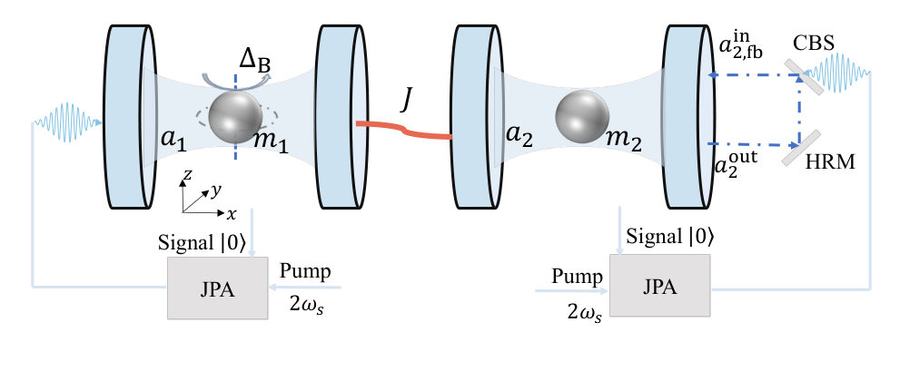
<figcaption class="paper-figure-caption"><b>Fig 1.</b> Figure 1: Schematic of the proposed system. Two microwave cavities, coupled via a coaxial cable with strength 𝐽, support photon modes 𝑎𝑗and contain YIG spheres with magnon modes 𝑚𝑗(𝑗= 1, 2). The left sphere rotates about the 𝑧axis, inducing a Barnett shift Δ𝐵, while the right sphere remains stationary. Two JPAs, pumped at 2𝜔𝑠with vacuum signal inputs, generate independent squeezed vacuum fields centered at 𝜔𝑠. The right-cavity output 𝑎out 2 is reflected by a HRM, mixed with the second squeezed input at a CBS, and reinjected as 𝑎in 2,fb.</figcaption>
</figure>
<figure class="paper-figure-card">
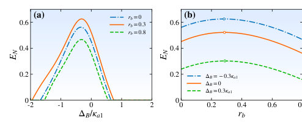
<figcaption class="paper-figure-caption"><b>Fig 2.</b> Figure 2: Steady-state magnon–magnon entanglement 𝐸𝑁 versus (a) the Barnett shift Δ𝐵∕𝜅𝑎1 for 𝑟𝑏= 0, 0.3, 0.8, and (b) the feedback reflectivity 𝑟𝑏for Δ𝐵∕𝜅𝑎1 = −0.3, 0, 0.3. Open circles mark the maxima in panel (b). The other parameters are specified in the text.</figcaption>
</figure>
<figure class="paper-figure-card">
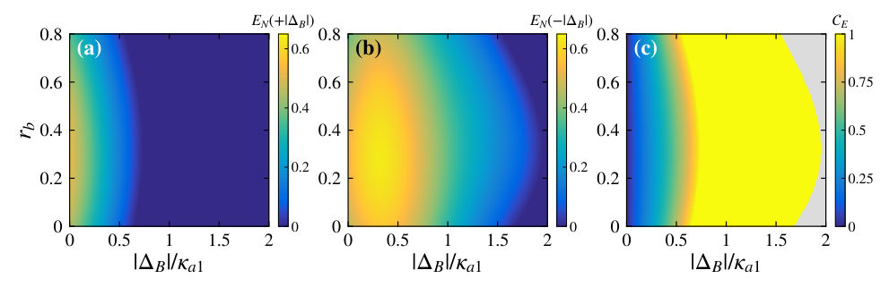
<figcaption class="paper-figure-caption"><b>Fig 3.</b> Figure 3: Steady-state magnon–magnon entanglement 𝐸𝑁for (a) positive and (b) negative Barnett shifts, and (c) the bidirectional contrast ratio 𝐸, versus |Δ𝐵|∕𝜅𝑎1 and 𝑟𝑏. Gray regions in (c) indicate vanishing entanglement for both rotation directions, where 𝐸is undefined. Other parameters are the same as in Fig. 2.</figcaption>
</figure>
<figure class="paper-figure-card">
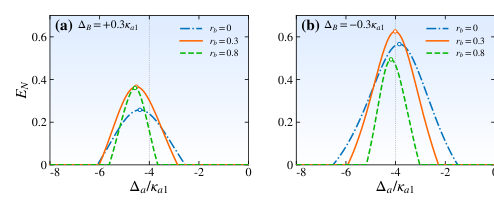
<figcaption class="paper-figure-caption"><b>Fig 4.</b> Figure 4: Steady-state magnon–magnon entanglement 𝐸𝑁 versus the common cavity detuning Δ𝑎1 = Δ𝑎2 = Δ𝑎for (a) Δ𝐵= +0.3𝜅𝑎1 and (b) Δ𝐵= −0.3𝜅𝑎1. The curves correspond to 𝑟𝑏= 0, 0.3, 0.8. Open circles mark the maxima, and vertical dotted lines indicate Δ𝑎= −4𝜅𝑎1. Other parameters are the same as in Fig. 3.</figcaption>
</figure>
<figure class="paper-figure-card">
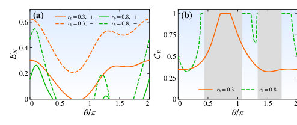
<figcaption class="paper-figure-caption"><b>Fig 5.</b> Figure 5: (a) Steady-state magnon–magnon entanglement 𝐸𝑁 and (b) normalized contrast 𝐸versus the feedback phase 𝜃 for 𝑟𝑏= 0.3 (orange) and 𝑟𝑏= 0.8 (green), with |Δ𝐵| = 0.3𝜅𝑎1. Solid and dashed curves in panel (a) correspond to positive and negative Barnett shifts, respectively. Gray regions in panel (b) indicate undefined contrast at 𝑟𝑏= 0.8, where entanglement vanishes for both signs. Other parameters are the same as in Fig. 4.</figcaption>
</figure>
</div>

<p><strong>Summary.</strong> This theoretical study proposes a controllable method to generate remote nonreciprocal entanglement between magnons in a coupled cavity system. By leveraging the Barnett effect and implementing coherent quantum feedback, the authors show that the entanglement can be selectively generated for one direction of the applied magnetic field while suppressing it in the opposite direction. This offers a versatile platform for quantum information processing using magnonic circuits.</p>
<p><strong>Why it may be interesting.</strong> This work is highly relevant to AMO physics as it combines several advanced topics: cavity quantum electrodynamics (magnonics), non-Hermitian physics (via feedback), and the study of quantum correlations (entanglement) in solid-state systems.</p>
<details>
<summary>Detailed structure</summary>
<p><strong>Main problem.</strong> The paper addresses the generation and control of remote nonreciprocal magnon-magnon entanglement in a coupled cavity magnonic system.</p>
<p><strong>Main result.</strong> They demonstrate that nonreciprocal entanglement can be achieved by tuning the system parameters, specifically showing that entanglement exists for one direction of the bias magnetic field while vanishing for the opposite.</p>
<p><strong>Method.</strong> The analysis uses Quantum Langevin Equations (QLEs) to model the system dynamics and quantifies entanglement using the logarithmic negativity of the magnon covariance matrix.</p>
<p><strong>Model / system.</strong> The system consists of two microwave cavities coupled to YIG spheres (one rotating, one stationary) and driven by squeezed vacuum fields, incorporating the Barnett effect and a coherent feedback loop.</p>
<p><strong>Key observables.</strong> Magnon-magnon entanglement ($E_N$), Asymmetry Contrast ($\xi_E$), and critical temperatures for entanglement vanishing.</p>
<p><strong>Important parameters / regimes.</strong> Cavity detuning, feedback phase, relative squeezing phase, squeezing factors ($R_1, R_2$), and the sign of the Barnett shift ($\Delta B$).</p>
<p><strong>Assumptions / limitations.</strong> The analysis assumes a lossless feedback loop and neglects propagation delay.</p>
<p><strong>Figures summary.</strong> Figures illustrate the dependence of entanglement ($E_N$) on the relative squeezing phase, feedback reflectivity ($r_b$), squeezing factors ($R_1$), and temperature ($T$) for both positive and negative Barnett shifts.</p>
<p><strong>Paper structure.</strong> The paper develops the theoretical model using QLEs, derives the necessary steady-state covariance matrix equations, and then systematically analyzes the entanglement measure ($E_N$) as a function of control parameters to establish the nonreciprocal control scheme.</p>
</details>
<details>
<summary>Abstract</summary>
<p>We propose a scheme for generating and controlling remote nonreciprocal magnon--magnon entanglement in a cavity magnonic system with coherent feedback.The two microwave cavities are driven by independent single-mode squeezed vacuum fields, with a rotating YIG sphere in the left cavity and a stationary one in the right cavity. For a fixed rotation direction, reversing the bias magnetic field applied to the rotating sphere changes the sign of the Barnett shift, leading to nonreciprocal magnon--magnon entanglement. By tuning the cavity detuning and feedback phase, entanglement can be generated for one direction of the bias magnetic field while it vanishes for the opposite direction, yielding complete nonreciprocity. Coherent feedback enhances the entanglement at an appropriate reflectivity, whereas stronger feedback can reduce it. The relative squeezing phase provides additional control, and an appropriate choice of unequal squeezing factors improves the entanglement at fixed total input photon occupation. With the squeezed inputs kept fixed, moderate feedback also increases the critical temperature for magnon entanglement.Our results provide a controllable approach to preparing remote nonreciprocal quantum correlations in cavity magnonic systems.</p>
</details>
<p><sub><a href="#top">↑ back to top</a></sub></p>

<p><a id="paper-2610.11126"></a></p>
<h3 id="probing-and-manipulating-quantum-materials-with-strong-field-terahertz-and-mid-infrared-radiation"><a href="http://arxiv.org/abs/2610.11126v1">Probing and Manipulating Quantum Materials with Strong-field Terahertz and Mid-infrared Radiation</a></h3>
<p><strong>Authors:</strong> S. J. Li, H. Y. Wu, S. J. Zhang, Y. T. Li<br>
<strong>Type:</strong> both · <strong>Category:</strong> strongly correlated electrons · <strong>PDF:</strong> <a href="https://arxiv.org/pdf/2610.11126v1">https://arxiv.org/pdf/2610.11126v1</a><br>
<strong>Analysis basis:</strong> full PDF text, analyzed in chunks
<strong>Topic relevance:</strong> <code>Keldysh / 2PI / non-Gaussian methods</code> <strong>3/5</strong> · <code>driven-dissipative phase transition</code> <strong>3/5</strong> · <code>methods for driven-dissipative</code> <strong>3/5</strong> · <code>non-equilibrium universality</code> <strong>3/5</strong> · <code>quantum measurements</code> <strong>2/5</strong> · <code>analog quantum simulation</code> <strong>1/5</strong> · <code>correlated / nonlocal dissipation</code> <strong>1/5</strong> · <code>interference shaping light</code> <strong>1/5</strong> · <code>quantum optics experiment</code> <strong>1/5</strong> · <code>scars &amp; prethermalization</code> <strong>1/5</strong></p>
<div class="figure-strip-hint">↔ Scroll figures horizontally</div>
<div class="paper-figures-scroll">
<figure class="paper-figure-card">
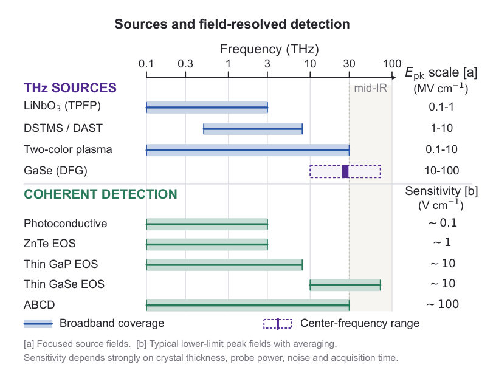
<figcaption class="paper-figure-caption"><b>Fig 1.</b> Figure 1: Representative frequency coverage of intense laser-driven terahertz sources and coherent detection</figcaption>
</figure>
<figure class="paper-figure-card">
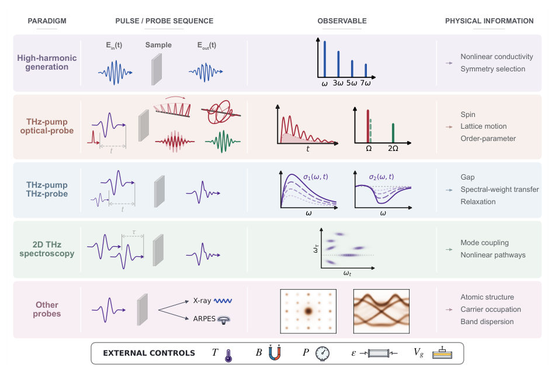
<figcaption class="paper-figure-caption"><b>Fig 2.</b> Figure 2: Experimental paradigms for nonlinear THz spectroscopy and control. These representative measure-</figcaption>
</figure>
</div>

<p><strong>Summary.</strong> This review surveys how strong-field Terahertz and Mid-infrared radiation are used to probe and manipulate emergent phenomena in quantum materials. By employing nonlinear spectroscopy, researchers can access complex dynamics related to coupled electronic, lattice, and superconducting orders. The work highlights the potential of these techniques to control material properties by driving systems far from equilibrium.</p>
<p><strong>Why it may be interesting.</strong> The techniques described—using intense, tunable THz/MIR fields to drive systems nonlinearly—are highly relevant to open quantum systems and quantum optics, as they represent coherent, non-equilibrium driving protocols for many-body systems.</p>
<details>
<summary>Detailed structure</summary>
<p><strong>Main problem.</strong> The central problem is identifying and controlling emergent phenomena in quantum materials by understanding the complex interactions among various degrees of freedom (charge, spin, orbital, lattice). This control is crucial for tailoring material properties.</p>
<p><strong>Main result.</strong> Strong-field THz and MIR radiation can drive quantum materials far from equilibrium, allowing for the transient reshaping and manipulation of ordered electronic and lattice states.</p>
<p><strong>Method.</strong> The work reviews techniques using nonlinear THz/MIR spectroscopy, including 2D spectroscopy and time-resolved measurements, to probe these complex dynamics.</p>
<p><strong>Model / system.</strong> The study covers diverse quantum materials, including superconductors (cuprates, $  ext{MgB}_2$), topological insulators, ferroelectrics ($   ext{SrTiO}_3$), and semiconductors (GaAs). The physics involves coupled electronic, lattice, and superconducting order parameters.</p>
<p><strong>Key observables.</strong> Nonlinear conductivity, order-parameter dynamics (e.g., Higgs mode), gap/spectral-weight transfer, and symmetry-sensitive responses.</p>
<p><strong>Important parameters / regimes.</strong> Strong-field THz and Mid-infrared radiation intensity, frequency, and phase coherence.</p>
<p><strong>Assumptions / limitations.</strong> Linear spectroscopy is insufficient for disentangling complex interactions, and the analysis often relies on semiclassical or anharmonic potential expansions.</p>
<p><strong>Figures summary.</strong> Figure 1 illustrates the frequency coverage of intense THz sources and detection methods. Figure 2 summarizes nonlinear THz spectroscopy paradigms, linking techniques (like THz-pump/THz-probe) to physical information (like gap dynamics).</p>
<p><strong>Paper structure.</strong> The review surveys progress by first establishing the need to probe coupled degrees of freedom. It then details the experimental platforms (THz/MIR sources, detection) and progresses through specific physical phenomena, such as nonlinear electronic dynamics, collective mode coupling, and symmetry-sensitive responses.</p>
</details>
<details>
<summary>Abstract</summary>
<p>Emergent phenomena in quantum materials arise from interactions among different degrees of freedom. Identifying these interactions and establishing their roles in ordered states are central problems in condensed-matter physics and provide a basis for controlling material properties. Many relevant low-energy excitations and gaps lie in the terahertz (THz) and mid-infrared (MIR) range, where intense phase-stable fields can both interrogate nonlinear dynamics and drive selected degrees of freedom far from equilibrium. This review surveys recent progress in probing and manipulating quantum materials with strong-field THz and MIR radiation, with emphasis on nonlinear electronic dynamics, collective-mode coupling, symmetry-sensitive responses and field-induced changes in electronic structure and ordered states. Particular attention is given to developments enabled by the Synergetic Extreme Condition User Facility (SECUF).</p>
</details>
<p><sub><a href="#top">↑ back to top</a></sub></p>

<p><a id="paper-2610.11831"></a></p>
<h3 id="controlling-transitions-between-nonequilibrium-states-through-active-bath-engineering"><a href="http://arxiv.org/abs/2610.11831v1">Controlling transitions between nonequilibrium states through active bath engineering</a></h3>
<p><strong>Authors:</strong> Dima Boriskovsky, Salambô Dago, Cyriaque Genet, Rémi Goerlich, Vincent Hardel, Paul-Antoine Hervieux, Harry L. F. Ip, Giovanni Manfredi, Laurent Mertz<br>
<strong>Type:</strong> both · <strong>Category:</strong> statistical mechanics · <strong>PDF:</strong> <a href="https://arxiv.org/pdf/2610.11831v1">https://arxiv.org/pdf/2610.11831v1</a><br>
<strong>Analysis basis:</strong> full PDF text, analyzed in chunks
<strong>Topic relevance:</strong> <code>correlated / nonlocal dissipation</code> <strong>3/5</strong> · <code>driven-dissipative phase transition</code> <strong>3/5</strong> · <code>methods for driven-dissipative</code> <strong>3/5</strong> · <code>non-equilibrium universality</code> <strong>3/5</strong> · <code>Keldysh / 2PI / non-Gaussian methods</code> <strong>2/5</strong> · <code>quantum measurements</code> <strong>2/5</strong> · <code>analog quantum simulation</code> <strong>1/5</strong> · <code>scars &amp; prethermalization</code> <strong>1/5</strong></p>
<div class="figure-strip-hint">↔ Scroll figures horizontally</div>
<div class="paper-figures-scroll">
<figure class="paper-figure-card">
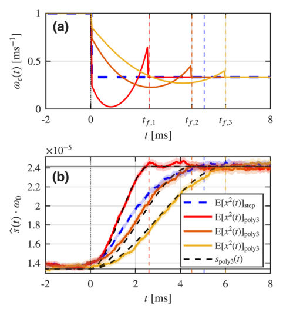
<figcaption class="paper-figure-caption"><b>Fig 1.</b> FIG. 1: NESS-to-NESS transition control. (a) Third-order polynomial control protocols ωc(t) for expansion with transition times tf = 2.60, 4.50, and 6 ms, compared with an instantaneous STEP protocol (blue dashed curve). (b) Corresponding experimental normalized variances ˆs(t) together with the analytical predictions of Eq. (9) (black dashed curves). Vertical dashed lines mark the prescribed tf, shaded regions indicate standard errors, and horizontal lines denote the NESS values ˆsi,f (Eq. (6)). Experimental parameters are D = 1.41 × 10−4 µm2/ms, ω0 = 0.49 ms−1, α = 0.01 Hz, and ωc is varied between 1 and 1</figcaption>
</figure>
<figure class="paper-figure-card">
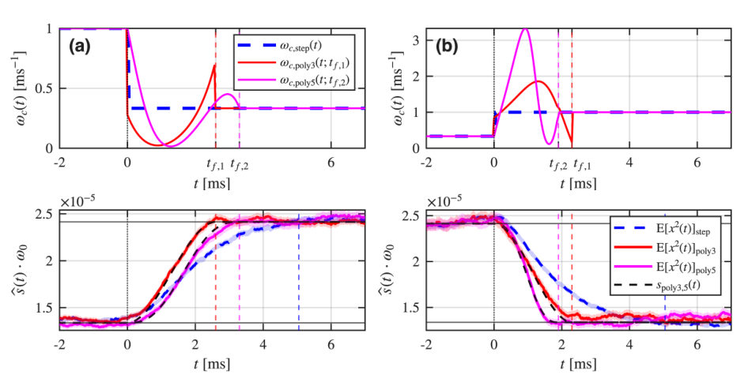
<figcaption class="paper-figure-caption"><b>Fig 2.</b> FIG. 2: Accelerated NESS transitions. Noise-color protocols ωc(t) (upper row, solid curves) and corresponding normalized ensemble-averaged variances ˆs(t) obtained from experimental trajectories (lower row), compared with an instantaneous STEP protocol (blue dashed curves). Black dashed curves show the analytical predictions of Eqs. (9) and (10), and shaded regions indicate standard errors. Horizontal lines indicate the initial and final NESS values ˆsi,f (Eq. (6)). (a) Expansions ∆ˆs &gt; 0, employing third and fifth-order protocols (p3, pcts 5 ), with tf,1 = 2.60 ms and tf,2 = 3.30 ms respectively. (b) Compressions ∆ˆs &lt; 0, with tf,1 = 2.30 ms and tf,2 = 1.90 ms. Both compared to a STEP...</figcaption>
</figure>
<figure class="paper-figure-card">
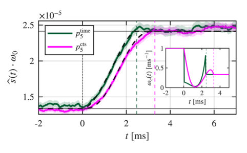
<figcaption class="paper-figure-caption"><b>Fig 3.</b> FIG. 3: Time-optimized fifth-order protocol ptime 5 (green), with (a1, a2) = (−0.55, −0.85), compared with the continuous protocol pcts 5 (magenta) for an expansion process (cf. Fig. 2(a)). Black dashed curves show the analytical prediction of Eq. (10), and shaded regions indicate standard errors. The optimized transition time tf = 2.47 ms, compared with tf = 3.30 ms for pcts 5 (horizontal dashed lines). The inset shows the corresponding control functions ωc(t). Both protocols are performed at their speed limit tf ≳tmin f . Experimental parameters are as in Fig. 1.</figcaption>
</figure>
<figure class="paper-figure-card">
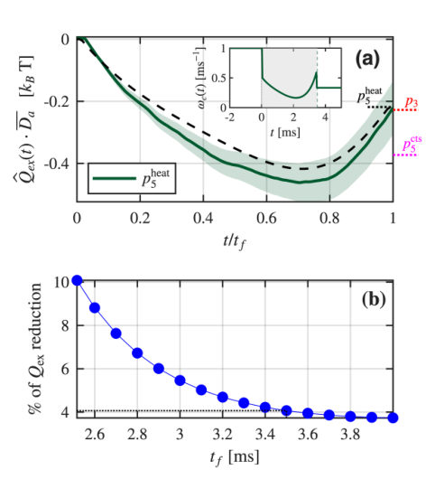
<figcaption class="paper-figure-caption"><b>Fig 4.</b> FIG. 4: (a) Normalized excess heat (Eq. 11) for the heat-optimal protocol pheat 5 with tf = 3.50 ms and (a1, a2) = (−0.25, −1.05); Da is the experimental average active diffusion coefficient (to restore units of energy); the inset shows the corresponding control function ωc(t). Solid line shows the experimental average, shaded region denotes standard errors, and black dashed line indicates the analytical solution. Horizontal dotted lines compare analytical accumulated excess heats (at t = tf) with p3 and pcts 5 . Experimental parameters are as in Fig. 1. (b) Excess heat reduction of heat-optimized pheat 5 versus p3 protocols from Monte-Carlo simulations (M = 107), estimated over a range of...</figcaption>
</figure>
<figure class="paper-figure-card">
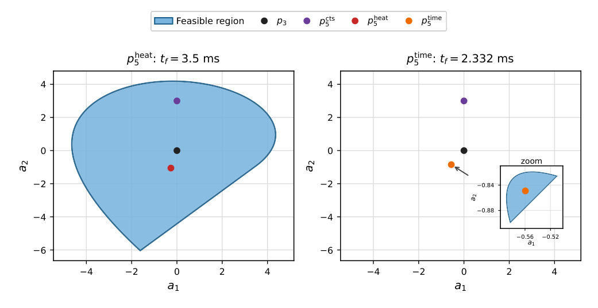
<figcaption class="paper-figure-caption"><b>Fig 5.</b> FIG. 5: Feasible regions of the fifth-order coefficients for the expansion ωc : 1 →1/3 ms−1 at ω0 = 0.49 ms−1. The feasible region F(tf) of Eq. (24) (blue) for the heat optimization at tf = 3.5 ms (left) and the time optimization at tf = 2.332 ms (right). Markers show p3 (black), pcts 5 (purple), pheat 5 (3.5) (red, left), and ptime 5 (orange, right). The inset zooms in on the right region around ptime 5 .</figcaption>
</figure>
</div>

<p><strong>Summary.</strong> This research introduces a method to control transitions between non-equilibrium steady states by actively engineering the noise correlations of the surrounding bath. Using a trapped particle model, the authors derive analytical protocols that allow for faster state changes than natural relaxation. The work is significant because it treats the bath's temporal correlations as a controllable parameter, enabling optimization of both speed and energy dissipation.</p>
<p><strong>Why it may be interesting.</strong> This work directly addresses non-equilibrium dynamics far from equilibrium, providing a quantitative method to steer system states using engineered environmental correlations, which is highly relevant for understanding open quantum systems and dissipation engineering.</p>
<details>
<summary>Detailed structure</summary>
<p><strong>Main problem.</strong> The paper develops and demonstrates control protocols for achieving finite-time transitions between active nonequilibrium steady states (NESSs).</p>
<p><strong>Main result.</strong> By actively engineering the temporal correlations (noise color) of the bath, transitions can be achieved substantially faster than natural relaxation times, while also allowing optimization of thermodynamic costs.</p>
<p><strong>Method.</strong> The core method involves reverse-engineering the required time-dependent correlation rate ($\omega_c(t)$) by solving the coupled differential equations governing the system's second moments (variance and covariance) based on a desired trajectory.</p>
<p><strong>Model / system.</strong> The system is modeled as a particle undergoing an Active Ornstein-Uhlenbeck Process (AOUP) confined in a harmonic trap. The active bath is controlled by modulating the noise correlation rate $\omega_c(t)$.</p>
<p><strong>Key observables.</strong> Normalized variance ($\hat{s}(t)$), excess heat ($\hat{Q}_{ex}$), and the transition duration ($t_f$).</p>
<p><strong>Important parameters / regimes.</strong> Trap relaxation rate ($\omega_0$), active diffusion coefficient ($D_a$), and the control parameter $\omega_c(t)$.</p>
<p><strong>Assumptions / limitations.</strong> The analysis relies on polynomial fitting (e.g., third- or fifth-order) to define the admissible control trajectories, and the system dynamics are analyzed via second moments.</p>
<p><strong>Figures summary.</strong> Figures illustrate the comparison between polynomial control protocols ($p_3$, $p_5$) and instantaneous step protocols for achieving faster transitions, and show the optimization of excess heat and minimum transition time.</p>
<p><strong>Paper structure.</strong> The paper first establishes the theoretical framework by deriving the moment equations and the required control law $\omega_c(t)$. It then develops and analyzes polynomial protocols ($p_3, p_5$) to achieve specific trajectories, followed by optimization procedures to minimize time or excess heat, culminating in experimental validation using a trapped colloidal particle.</p>
</details>
<details>
<summary>Abstract</summary>
<p>We develop a family of control protocols for finite-time transitions between active nonequilibrium steady states using the noise-color (correlation rate) as the sole control parameter. By reverse-engineering the second moment dynamics of an active Ornstein-Uhlenbeck process, we determine the time-dependent correlation rate required to realize a prescribed evolution of the system's state. We experimentally implement these protocols with a micrometer-sized optically trapped particle coupled to an engineered active bath, demonstrating transitions substantially faster than the natural relaxation while keeping the confining potential, noise amplitude, and temperature fixed. Our approach extends engineered swift-equilibration methods to far-from-equilibrium steady states by directly controlling the temporal correlations of an active environment. We show how physical constraints impose a speed limit on finite-time transitions, while the freedom in choosing the prescribed system evolution can be exploited to eliminate control discontinuities, minimize the admissible transition time, or optimize a thermodynamic cost.</p>
</details>
<p><sub><a href="#top">↑ back to top</a></sub></p>

<p><a id="paper-2610.10794"></a></p>
<h3 id="coherence-assisted-quantum-state-preparation-and-thermal-control-through-repeated-interactions"><a href="http://arxiv.org/abs/2610.10794v1">Coherence-assisted quantum state preparation and thermal control through repeated interactions</a></h3>
<p><strong>Authors:</strong> Alessandro Prositto, Dvira Segal<br>
<strong>Type:</strong> theory · <strong>Category:</strong> statistical mechanics · <strong>PDF:</strong> <a href="https://arxiv.org/pdf/2610.10794v1">https://arxiv.org/pdf/2610.10794v1</a><br>
<strong>Analysis basis:</strong> full PDF text, analyzed in chunks
<strong>Topic relevance:</strong> <code>correlated / nonlocal dissipation</code> <strong>3/5</strong> · <code>driven-dissipative phase transition</code> <strong>3/5</strong> · <code>methods for driven-dissipative</code> <strong>3/5</strong> · <code>non-equilibrium universality</code> <strong>3/5</strong> · <code>quantum measurements</code> <strong>2/5</strong> · <code>Keldysh / 2PI / non-Gaussian methods</code> <strong>1/5</strong> · <code>analog quantum simulation</code> <strong>1/5</strong> · <code>scars &amp; prethermalization</code> <strong>1/5</strong></p>
<div class="figure-strip-hint">↔ Scroll figures horizontally</div>
<div class="paper-figures-scroll">
<figure class="paper-figure-card">
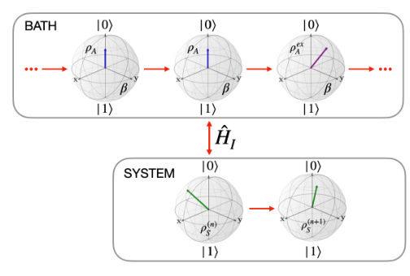
<figcaption class="paper-figure-caption"><b>Fig 1.</b> FIG. 1: Diagram of the dynamics induced by sequential interactions with thermal ancillas at temperature 1/β. At each step n, the system evolves from state ρ(n) S to state ρ(n+1) S through an interaction with an ancilla in the Gibbs state ρA. Due to the interaction, the ancilla evolves into an “exhausted” state ρex A . The ancilla is replaced or refreshed before the next interaction. The system evolves towards the thermal state of temperature 1/β.</figcaption>
</figure>
<figure class="paper-figure-card">
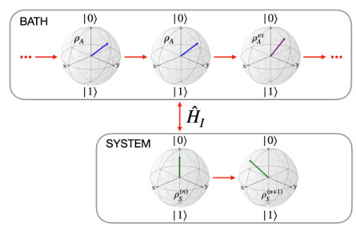
<figcaption class="paper-figure-caption"><b>Fig 2.</b> FIG. 2: Diagram of system dynamics induced by sequential interactions with coherent ancillas. At each step n, the system evolves from state ρ(n) S to ρ(n+1) S through an interaction with a coherent ancilla in the initial state ρA. The ancilla evolves into an “exhausted” state ρex A . It is replaced or refreshed before the next interaction. The system evolves towards its fixed point, a state with nonzero coherence.</figcaption>
</figure>
<figure class="paper-figure-card">
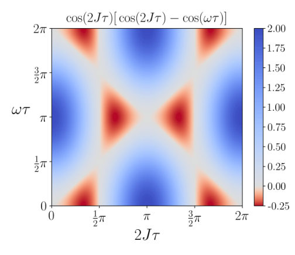
<figcaption class="paper-figure-caption"><b>Fig 3.</b> FIG. 3: The cooling condition, f(2Jτ, ωτ) = cos(2Jτ)  cos(2Jτ) −cos(ωτ)  &gt; 0, see Eq. (21). Regions in blue indicate enhancing the ground state population of the system relative to the ancilla (cooling); regions in red represent domain where the opposite is true (heating).</figcaption>
</figure>
<figure class="paper-figure-card">
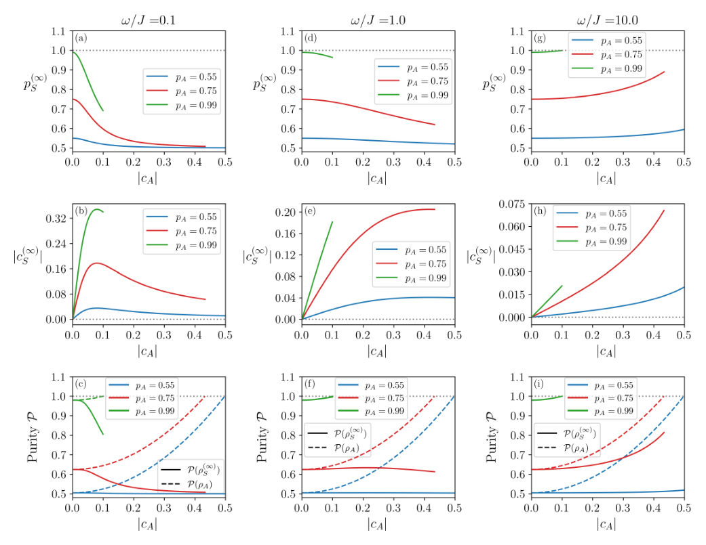
<figcaption class="paper-figure-caption"><b>Fig 4.</b> FIG. 4: Impact of environmental coherence on populations (a,d,g), coherence (b,e,h), and purity (c,f,i) of the system at steady state, reported for different values of the ratio ω/J. In (c,f,i), we also show, as a dashed line, the purity of the environmental ancilla before a collision. We set J = 1 and τ = 0.1, varying ω ∈{0.1, 1, 10}. We selected three values for pA, i.e. the ground</figcaption>
</figure>
<figure class="paper-figure-card">
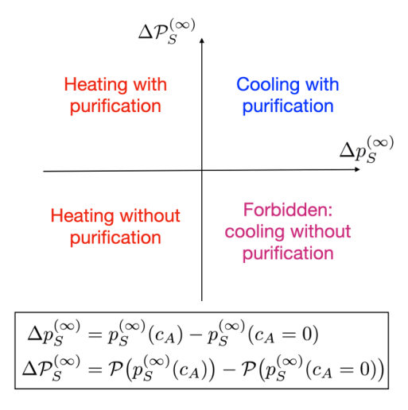
<figcaption class="paper-figure-caption"><b>Fig 5.</b> FIG. 5: Summary of the different operating regimes of the coherent environment in relation to cooling and purification.</figcaption>
</figure>
</div>

<p><strong>Summary.</strong> This theoretical paper analyzes a qubit interacting with a coherent environment through repeated collisions. It demonstrates that environmental coherence acts as a powerful resource, allowing the system to achieve steady states with enhanced purity and even cool below the bath temperature. Furthermore, it shows that this coherence can induce anomalous heat flow, controlled by the relative phase between system and ancilla coherence.</p>
<p><strong>Why it may be interesting.</strong> This work directly addresses non-equilibrium thermodynamics and open quantum systems, showing how environmental correlations (coherence) can violate simple thermal assumptions to control energy flow and state preparation.</p>
<details>
<summary>Detailed structure</summary>
<p><strong>Main problem.</strong> The paper investigates how environmental coherence influences the relaxation dynamics and steady state of a qubit interacting with a coherent environment via repeated interactions.</p>
<p><strong>Main result.</strong> Environmental coherence acts as a quantum resource, enabling cooling below the bath temperature and allowing for anomalous heat flow whose direction depends on the relative phase of the coherence.</p>
<p><strong>Method.</strong> The authors derive an exact analytical solution for the dynamics using the Markovian repeated-interaction (RI) framework, analyzing the evolution map $
ho^{(n+1)}_S =  ext{Tr}_A { \hat{U}(   au) 
ho^{(n)}_S \otimes 
ho_A \hat{U}^\dagger(   au) }$.</p>
<p><strong>Model / system.</strong> The model consists of a single qubit (System, S) interacting sequentially with an ancillary qubit (Ancilla, A) via a flip-flop interaction Hamiltonian. The dynamics are treated as a Markovian process.</p>
<p><strong>Key observables.</strong> System ground-state population ($p^{(n)}_S$), coherence ($c^{(n)}_S$), steady-state purity, and the direction/amount of heat transfer.</p>
<p><strong>Important parameters / regimes.</strong> System-ancilla coupling strength ($J$), interaction time ($ au$), environmental coherence magnitude ($|c_A|$), and the relative phase between system and ancilla coherence.</p>
<p><strong>Assumptions / limitations.</strong> The analysis assumes the system and ancilla are resonant ($\omega_S = \omega_A$) and that the process is Markovian (no memory effects between collisions).</p>
<p><strong>Figures summary.</strong> The notes mention figures illustrating the required number of iterations ($n^*$) to reach steady state, showing it increases with environmental coherence, and plots showing the steady-state coherence and $l_1$-norm as a function of environmental coherence.</p>
<p><strong>Paper structure.</strong> The paper introduces the model and derives the exact solution (Section II), investigates cooling below bath temperature and purity enhancement (Section III), and analyzes the thermodynamics and anomalous heat flow (Section IV).</p>
</details>
<details>
<summary>Abstract</summary>
<p>We investigate the relaxation dynamics and steady state of a qubit interacting with a coherent environment through an energy-conserving flip-flop interaction within the Markovian repeated-interaction framework. We derive an exact analytical solution for the evolving and stationary state, nonperturbative in the environmental coherence. We show that environmental coherence provides a resource for dissipative state preparation by expanding the set of accessible steady states. In particular, coherent ancillas can increase the system ground- state population beyond that of the bath, corresponding to an effective temperature below the bath temperature, and enhance its steady-state purity, with these effects controlled by the interplay between the system energy scale and the system-ancilla coupling. Nevertheless, we prove that the purity of the system can never exceed the purity of the ancilla. We further analyze the thermodynamics of the protocol and show that environmental coherence can modify and even reverse the natural direction of heat transfer, giving rise to anomalous heat flow. Remarkably, for fixed interaction parameters, the direction of the coherence-induced heat transfer is governed by the relative phase between the system and ancilla coherence, whereas their magnitudes determine the amount of heat exchanged. Our results establish environmental coherence as a resource for controlling steady-state preparation and energy transfer in repeated-interaction dynamics.</p>
</details>
<p><sub><a href="#top">↑ back to top</a></sub></p>

<p><a id="paper-2610.10944"></a></p>
<h3 id="helicity-decoupling-ultrastrong-rabi-splitting-from-quantum-vacuum-dressing"><a href="http://arxiv.org/abs/2610.10944v1">Helicity decoupling ultrastrong Rabi splitting from quantum vacuum dressing</a></h3>
<p><strong>Authors:</strong> Ayoub El-Amrani, Nasir Boubekraoui, Zakaria Mzaouali, Houssam Sabri, Herschel Rabitz, Abdelouahed El Fatimy, Dukhyung Lee<br>
<strong>Type:</strong> both · <strong>Category:</strong> other · <strong>PDF:</strong> <a href="https://arxiv.org/pdf/2610.10944v1">https://arxiv.org/pdf/2610.10944v1</a><br>
<strong>Analysis basis:</strong> full PDF text, analyzed in chunks
<strong>Topic relevance:</strong> <code>analog quantum simulation</code> <strong>3/5</strong> · <code>quantum optics experiment</code> <strong>3/5</strong> · <code>Tavis-Cummings &amp; cavity-many-emitter</code> <strong>2/5</strong> · <code>driven-dissipative phase transition</code> <strong>2/5</strong> · <code>interference shaping light</code> <strong>2/5</strong> · <code>methods for driven-dissipative</code> <strong>2/5</strong> · <code>Keldysh / 2PI / non-Gaussian methods</code> <strong>1/5</strong> · <code>correlated / nonlocal dissipation</code> <strong>1/5</strong> · <code>quantum measurements</code> <strong>1/5</strong></p>
<div class="figure-strip-hint">↔ Scroll figures horizontally</div>
<div class="paper-figures-scroll">
<figure class="paper-figure-card">
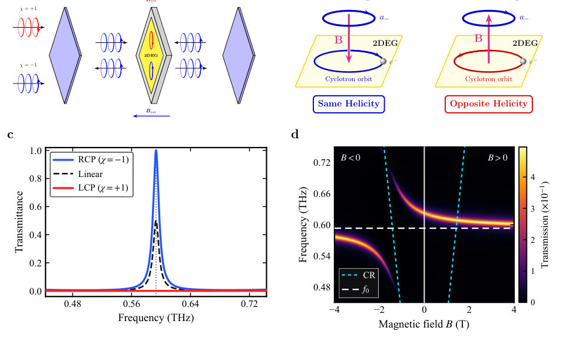
<figcaption class="paper-figure-caption"><b>Fig 1.</b> Figure 1: Fixed-helicity cavity coupled to cyclotron resonance. a, Chiral photonic-crystal cavity containing the 2DEG. The cavity helicity is fixed, while reversal of B reverses the cyclotron motion. b, Single-helicity interaction scheme for the fixed cavity mode a−. For B &lt; 0, the cyclotron motion rotates in the same sense as a−, producing resonant excitation exchange. Reversing the magnetic field reverses the cyclotron rotation while leaving the cavity mode unchanged, so for B &gt; 0 the interaction becomes anti-resonant. c, Polarization-resolved passive-cavity transmission for RCP, LCP and linearly polarized excitation, showing an isolated RCP cavity resonance and strong suppression of the...</figcaption>
</figure>
<figure class="paper-figure-card">
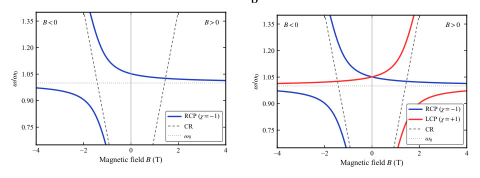
<figcaption class="paper-figure-caption"><b>Fig 2.</b> Figure 2: Helicity reorganizes the ultrastrong-coupling spectrum. a, single helicity chiral cavity. For B &lt; 0, the cavity field and cyclotron motion rotate in the same sense and form upper and lower polaritons. For B &gt; 0, field reversal reverses the cyclotron motion but not the cavity mode, and the conventional avoided crossing disappears. b, Non-chiral cavity supporting both RCP (χ = −1) and LCP (χ = +1) modes, calculated with the same coupling strength g. For either magnetic field direction, one circular mode participates in resonant polariton formation while the other provides the anomalous interaction channel.</figcaption>
</figure>
<figure class="paper-figure-card">
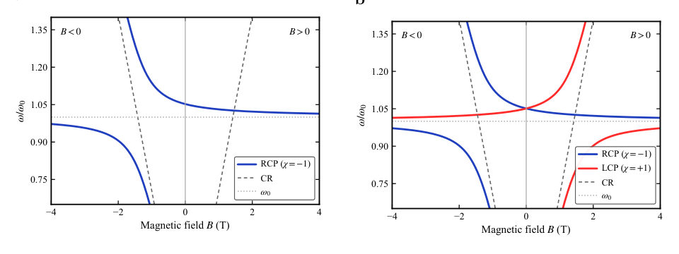
<figcaption class="paper-figure-caption"><b>Fig 3.</b> Figure 2 makes the role of the photonic environment explicit. In the chiral cavity (Fig. 2a), field reversal changes the type of interaction experienced by the same cavity mode. The resulting eigenfrequencies closely follow the magnetotransmission of Fig. 1: the polaritonic branches appear only when the cavity field and cyclotron motion have the same handedness, whereas the opposite field direction retains the shifted cavity-like branch without a conventional anticrossing. The non-chiral cavity provides the reference case (Fig. 2b). Because both circular modes are present, reversing the cyclotron motion simply changes which one participates in resonant hybridiza- tion. The difference...</figcaption>
</figure>
<figure class="paper-figure-card">
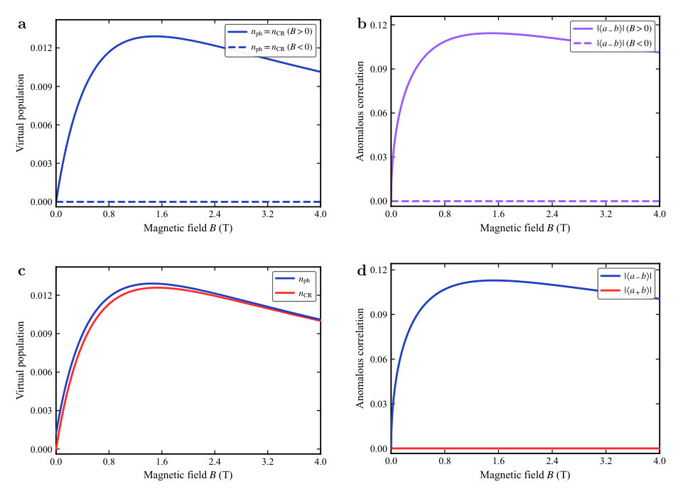
<figcaption class="paper-figure-caption"><b>Fig 4.</b> Figure 3: Helicity reshapes the interacting quantum vacuum. a, Virtual photon and CR populations in the single helicity chiral cavity. They vanish for B &lt; 0 and become equal and finite for B &gt; 0. b, Corresponding anomalous photon–CR correlation. c, Total virtual photon and CR populations in the non-chiral cavity, shown for B &gt; 0; the opposite field direction is equivalent upon exchanging the two helicities. d, Anomalous correlations between the CR and the two circular cavity modes in the non-chiral cavity.</figcaption>
</figure>
</div>

<p><strong>Summary.</strong> The authors show that in systems with ultrastrong light-matter coupling, the formation of polaritons and the dressing of the quantum vacuum are not equivalent. By utilizing helicity control in a chiral cavity coupled to a 2DEG, they can independently access these two regimes, proving that a large Rabi splitting alone does not guarantee a dressed vacuum state.</p>
<p><strong>Why it may be interesting.</strong> This work provides a clean, experimentally addressable platform (chiral cavities) to decouple two closely related, yet distinct, quantum phenomena (polaritons vs. vacuum correlations) in the regime of ultrastrong coupling, which is highly relevant to cavity QED.</p>
<details>
<summary>Detailed structure</summary>
<p><strong>Main problem.</strong> To demonstrate that polariton formation (spectral hybridization) and quantum vacuum dressing are distinct physical phenomena arising from ultrastrong light-matter coupling.</p>
<p><strong>Main result.</strong> By controlling the helicity of the cavity field relative to the cyclotron motion, the system can be tuned to exhibit either conventional polariton anticrossings or vacuum dressing effects, proving the two are distinct.</p>
<p><strong>Method.</strong> Theoretical modeling using Hamiltonian approaches and advanced numerical techniques like the Transfer Matrix Method (TMM) and full-wave finite-element simulations.</p>
<p><strong>Model / system.</strong> The system involves cyclotron resonance coupled to a chiral cavity supporting a single circular mode, realized in a 2DEG coupled to a photonic crystal cavity.</p>
<p><strong>Key observables.</strong> Rabi splitting, polaritonic anticrossing, ground state squeezing, virtual excitation populations, and polarization-resolved magnetotransmission spectra.</p>
<p><strong>Important parameters / regimes.</strong> Helicity ($\chi$), magnetic field direction ($B$), cyclotron frequency ($\omega_c$), and coupling strength ($g$).</p>
<p><strong>Assumptions / limitations.</strong> The analysis relies on a single-mode approximation for the cavity and assumes the ability to fix the cavity helicity while reversing the magnetic field on the 2DEG.</p>
<p><strong>Figures summary.</strong> Figures illustrate the spectral reorganization, showing a clear avoided crossing when the cavity and cyclotron motion co-rotate ($B<0$), and the disappearance of this crossing with the acquisition of vacuum correlations when they counter-rotate ($B>0$).</p>
<p><strong>Paper structure.</strong> The paper establishes the physical setup using chiral cavities, develops the Hamiltonian based on helicity control, and then analyzes two distinct regimes ($B<0$ vs $B>0$) to spectroscopically and correlationally separate the effects of hybridization from vacuum dressing.</p>
</details>
<details>
<summary>Abstract</summary>
<p>Polaritons and quantum vacuum dressing are usually regarded as intertwined consequences of ultrastrong light-matter coupling. Here we show that they can be controlled independently through helicity. We consider cyclotron resonance coupled to a chiral cavity supporting a single circular mode. When the helicity of the cavity field matches the cyclotron motion, energy is exchanged resonantly between light and matter, producing a large Rabi splitting and conventional polaritons, while the ground state remains the bare vacuum. Reversing the magnetic field reverses the cyclotron motion without changing the cavity. The same mode then couples through anomalous processes that create and annihilate light and matter excitations in pairs: the conventional polaritonic anticrossing disappears, while the ground state acquires squeezing and virtual excitations. These two regimes show that spectral hybridization and quantum vacuum dressing are distinct manifestations of ultrastrong coupling, and that a large Rabi splitting alone does not imply a dressed quantum vacuum. Helicity therefore provides a route to controlling polariton formation and quantum correlations as distinct resources in cavity quantum materials.</p>
</details>
<p><sub><a href="#top">↑ back to top</a></sub></p>

<p><a id="paper-2610.10763"></a></p>
<h3 id="engineering-quantum-interactions-from-effective-models-to-validated-physical-predictions"><a href="http://arxiv.org/abs/2610.10763v1">Engineering Quantum Interactions: From Effective Models to Validated Physical Predictions</a></h3>
<p><strong>Authors:</strong> Sinara S. Dourado, Ciro Micheletti Diniz, Gabriel P. L. M. Fernandes, Rogério J. de Assis, G. D. de Moraes Neto, Celso J. Villas-Boas<br>
<strong>Type:</strong> theory · <strong>Category:</strong> other · <strong>PDF:</strong> <a href="https://arxiv.org/pdf/2610.10763v1">https://arxiv.org/pdf/2610.10763v1</a><br>
<strong>Analysis basis:</strong> full PDF text, analyzed in chunks
<strong>Topic relevance:</strong> <code>Keldysh / 2PI / non-Gaussian methods</code> <strong>3/5</strong> · <code>methods for driven-dissipative</code> <strong>3/5</strong> · <code>analog quantum simulation</code> <strong>2/5</strong> · <code>driven-dissipative phase transition</code> <strong>2/5</strong> · <code>Tavis-Cummings &amp; cavity-many-emitter</code> <strong>1/5</strong> · <code>correlated / nonlocal dissipation</code> <strong>1/5</strong> · <code>non-equilibrium universality</code> <strong>1/5</strong> · <code>quantum measurements</code> <strong>1/5</strong></p>
<div class="figure-strip-hint">↔ Scroll figures horizontally</div>
<div class="paper-figures-scroll">
<figure class="paper-figure-card">
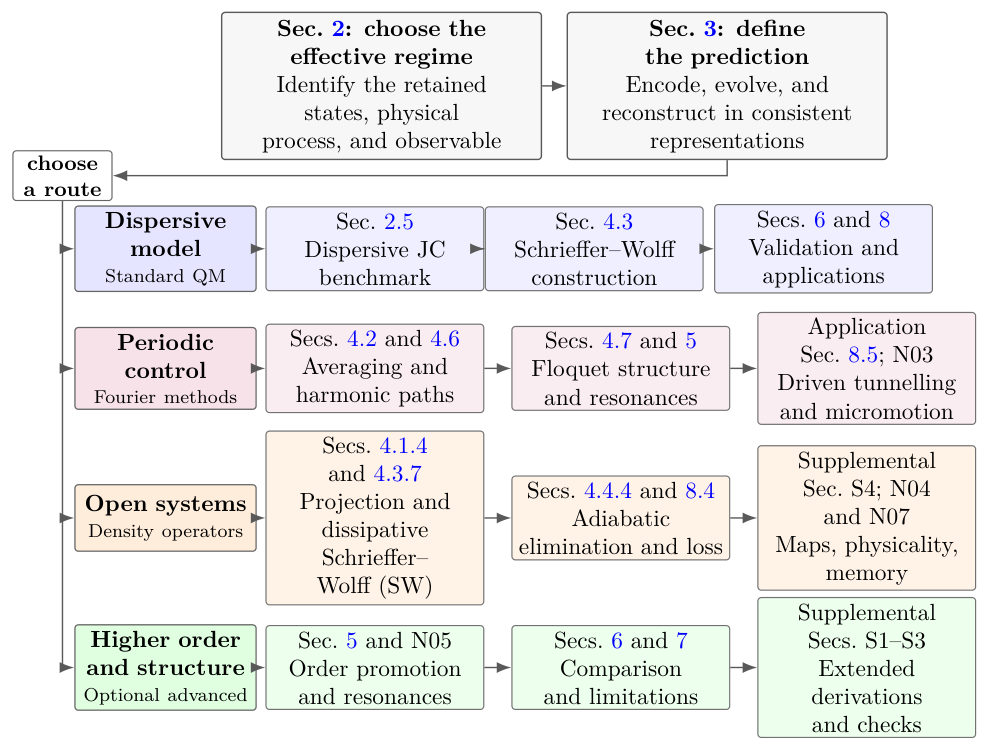
<figcaption class="paper-figure-caption"><b>Fig 1.</b> Figure 1: Suggested routes through the article. Each route begins with the regime selection developed in Sec. 2 and the encoding–evolution–reconstruction framework of Sec. 3. The first three rows provide direct paths to a calculation and an application; the final row leads to higher-order and structural topics. Arrows show the suggested reading order. Labels N03–N07 refer to the companion notebooks described below and in Supplemental Sec. S5.</figcaption>
</figure>
<figure class="paper-figure-card">

<figcaption class="paper-figure-caption"><b>Fig 2.</b> Figure 2: One microscopic model, several effective theories. The quantum Rabi Hamiltonian admits distinct controlled descriptions because different parameter regimes select different natural bases and retained processes. Near resonance, the Jaynes–Cummings reduction retains real one- excitation exchange. Far from resonance, exchange is virtual and produces conditional shifts, phases, mediated interactions, and dressed dissipation. At intermediate and deep-strong coupling, a displaced-oscillator basis exposes parity doublets and distinguishes bare, displaced, and detector- defined excitations. In the singular large-frequency-ratio limit at fixed λ = 2g/√ω0ωa, quadratic normal- and...</figcaption>
</figure>
<figure class="paper-figure-card">

<figcaption class="paper-figure-caption"><b>Fig 3.</b> Figure 3: Changing spectral organization of the quantum Rabi model. (a) Lowest exact excitation energies of the resonant quantum Rabi model, ω0 = ωa, as a function of the normalized coupling g/ωa. Solid and dashed curves denote the two exact parity sectors, Π = +1 and Π = −1, respectively. At weak coupling, the spectrum retains the organization inherited from Jaynes–Cummings excitation manifolds. At deep-strong coupling, it reorganizes into nearly degenerate opposite-parity pairs associated with qubit-conditioned displaced oscillators. (b) Normalized low- energy subspace fidelity Fsub = d−1 Tr(PexactPref) between the exact six-dimensional low-energy subspace and, respectively, the...</figcaption>
</figure>
<figure class="paper-figure-card">

<figcaption class="paper-figure-caption"><b>Fig 4.</b> Figure 4: Bare, displaced, and detector-defined excitations in the deep-strong-coupling regime. (a) Bare ground-state occupation n(G) bare = ⟨G|ˆa†ˆa|G⟩approaching (g/ωa)2 at strong coupling. (b) Displaced-frame occupation, n(G) disp = ⟨G|ˆb†ˆb|G⟩, with b = ˆa + (g/ωa)ˆσx, and detector-defined</figcaption>
</figure>
<figure class="paper-figure-card">

<figcaption class="paper-figure-caption"><b>Fig 5.</b> Figure 5: A complete effective prediction. The preparation is encoded in the selected description, evolved with the effective map, and reconstructed in the physical representation. The lower loop compares that prediction with direct benchmarks, controlled limits, internal diagnostics, and independent evidence.</figcaption>
</figure>
</div>

<p><strong>Summary.</strong> This paper presents a comprehensive, unified framework for building and validating effective quantum models from complex dynamics. It moves beyond simple derivation by enforcing a three-step consistency check—encoding, evolution, and reconstruction—to ensure physical predictions are robust. This methodology is vital for accurately modeling systems like cavity QED or driven lattices where approximations are common.</p>
<p><strong>Why it may be interesting.</strong> This work provides a crucial methodological toolkit for AMO physicists working with open quantum systems, offering rigorous diagnostics to distinguish between a mathematically derived effective Hamiltonian and one that yields physically consistent predictions.</p>
<details>
<summary>Detailed structure</summary>
<p><strong>Main problem.</strong> The paper aims to develop a unified and rigorous framework for constructing and validating effective quantum models that accurately predict measurable physical quantities.</p>
<p><strong>Main result.</strong> It establishes a three-step, order-consistent process (encoding, evolution, reconstruction) for physical predictions, systematically exposing failures in approximations like leakage or inconsistent observables.</p>
<p><strong>Method.</strong> The framework unifies multiple projection techniques, including Schrieffer-Wolff transformations, Magnus expansions, Floquet theory, and adiabatic elimination, to derive effective dynamics.</p>
<p><strong>Model / system.</strong> The Quantum Rabi Model serves as a recurring benchmark, allowing the systematic comparison of different effective descriptions derived under varying physical regimes (e.g., near vs. far from resonance). Applications include light-matter coupling and driven lattices.</p>
<p><strong>Key observables.</strong> Control parameters, virtual processes, spectral corrections, and the reconstructed physical observable ($\hat{
ho}_{	ext{rec}}(t)$).</p>
<p><strong>Important parameters / regimes.</strong> Detuning ($\Delta$), coupling strength ($g$), and the ratio of coupling to spectral gaps, which dictate the validity of approximations.</p>
<p><strong>Assumptions / limitations.</strong> The core challenge is ensuring consistency across all components (manifold, observables, dissipation) when eliminating high-energy or fast degrees of freedom.</p>
<p><strong>Paper structure.</strong> The paper is structured around developing the unified framework, benchmarking it using the Rabi model, and detailing the three-step process for generating and validating physical predictions.</p>
</details>
<details>
<summary>Abstract</summary>
<p>Effective models make complex quantum dynamics tractable by retaining only the states, processes, and timescales relevant to a given physical question. Their predictive power, however, depends on treating the retained manifold, initial state, observables, micromotion, dissipative channels, and eliminated degrees of freedom consistently. We develop a unified framework for constructing and validating effective descriptions using projection methods, Schrieffer--Wolff transformations, Magnus expansions, adiabatic elimination, small rotations, time coarse graining, and Floquet theory. The quantum Rabi model and its dispersive limits serve as recurring benchmarks for identifying control parameters, virtual processes, spectral corrections, observable dressing, and breakdown. Higher-order resonances and applications to collective light--matter coupling, Raman processes, spin-chain buses, lossy mediators, and driven lattices illustrate how effective interactions can be interpreted and designed. A physical prediction is organized into three order-consistent steps: encoding into the retained description, evolution under the effective dynamics, and reconstruction of the physical observable. This viewpoint exposes failures caused by leakage, small denominators, neglected micromotion, inconsistent observables, memory effects, or incorrectly transformed dissipation, while linking derivation, physical interpretation, and mechanism-guided discovery. Companion notebooks provide QuTiP implementations, convergence tests, and microscopic-to-effective comparisons.</p>
</details>
<p><sub><a href="#top">↑ back to top</a></sub></p>

<p><a id="paper-2610.12406"></a></p>
<h3 id="local-polarization-control-of-optical-tweezer-arrays"><a href="http://arxiv.org/abs/2610.12406v1">Local polarization control of optical tweezer arrays</a></h3>
<p><strong>Authors:</strong> Xiangkai Sun, Richard Bing-Shiun Tsai, Andrew Winnicki, Yuan Le, Kon H. Leung, Nelson Darkwah Oppong, Manuel Endres<br>
<strong>Type:</strong> experiment · <strong>Category:</strong> other · <strong>PDF:</strong> <a href="https://arxiv.org/pdf/2610.12406v1">https://arxiv.org/pdf/2610.12406v1</a><br>
<strong>Analysis basis:</strong> full PDF text, analyzed in chunks
<strong>Topic relevance:</strong> <code>QC/QI experiment</code> <strong>3/5</strong> · <code>analog quantum simulation</code> <strong>3/5</strong> · <code>Rydberg arrays</code> <strong>2/5</strong> · <code>interference shaping light</code> <strong>2/5</strong> · <code>quantum measurements</code> <strong>2/5</strong> · <code>quantum optics experiment</code> <strong>2/5</strong></p>
<div class="figure-strip-hint">↔ Scroll figures horizontally</div>
<div class="paper-figures-scroll">
<figure class="paper-figure-card">

<figcaption class="paper-figure-caption"><b>Fig 1.</b> Fig. 1 | Programming of individual tweezer polarization. (a) Setup for local polarization control. An acousto-optic deflector (AOD) generates a one-dimensional array that is relayed to an image plane inside the vacuum chamber to create optical tweezer traps. An SLM placed at an intermediate image plane, combined with a pair of QWPs (oriented at 45◦to the SLM’s principal axes), allows for arbitrary linear polarization rotations of each tweezer. The rotation is half the phase φ imprinted by the illuminated SLM pixels. (b) SLM phase pattern at the intermediate image plane. The SLM mask is divided into “superpixels” (shown as differently colored regions) with a single phase applied per...</figcaption>
</figure>
<figure class="paper-figure-card">

<figcaption class="paper-figure-caption"><b>Fig 2.</b> Fig. 2 | Local control of atomic transition frequencies. (a) Polarization tuning of the tensor light shift. We apply a voltage to a superpixel and measure the differential light shift, ν, of the 1S0 ↔3P1 transition relative to free space, allowing us to extract θ, the angle between the linear tweezer polarization ϵ and the bias magnetic field B. (b) Tweezer loading is signaled by successful atom imaging, which in turn requires that the same global cooling-laser detuning be effective at every site. Left uncompensated, site-dependent light shifts cause a large scatter in the optimal cooling laser frequencies (top). With local polarization correction, a single global cooling frequency loads...</figcaption>
</figure>
<figure class="paper-figure-card">

<figcaption class="paper-figure-caption"><b>Fig 3.</b> Fig. 3 | Zone architecture for optical tweezer arrays with local polarization programmability. (a) Proposed zone layout for a 2D array. Three orthogonal cooling beams intersect to form the cooling zone, where the tweezer polarizations are tuned to θ ≈θM. Atoms in the reservoir and computing zones are spectrally isolated from the cooling light via tweezer polarization tuning. (b) Magic-angle sideband cooling on the 1S0 ↔3P1 transition following fluorescence imaging, achieving a site-averaged radial motional occupation of ¯nr = 0.137(19) after 9.6 ms of cooling time. (c) Inter-zone transport survival versus total polarization change ∆θ. We observe the onset of atom loss for |∆θ| &gt; π/8, which...</figcaption>
</figure>
<figure class="paper-figure-card">

<figcaption class="paper-figure-caption"><b>Fig 4.</b> Fig. 4 | Polarization noise and stabilization. (a) Top: polarimeter comprising a polarizing beam splitter (PBS) and two photodiodes (PDs). Bottom: power spectral density (PSD) of the linear polarization-angle noise. When used for local tweezer polarization rotation, the SLM introduces significant excess polarization-angle noise in the 10−3 Hz to 104 Hz band. Over a 24-hour measurement, the integrated polarization noise is ≈5 mrad, dominated by slow drifts correlated with ambient humidity and temperature. (b) On hour-long timescales, we actively stabilize the tweezer polarizations by updating the superpixel phases to steer the probed line centers of the 1S0 ↔3P1 carrier transition to the...</figcaption>
</figure>
<figure class="paper-figure-card">

<figcaption class="paper-figure-caption"><b>Fig 5.</b> FIG. 5. SLM phase calibration. (a) SLM phase-voltage calibration with a polarimeter. We use the polarimeter setup depicted in Fig. 4a to measure the s and p components (represented by cyan and orange) after the imaging objective. Dark: all 13 tweezers; light: one tweezer. We observe a contrast of 90.6(7)% and 97.8(5)% respectively. (b) Polarization angle calibration with optical polarimeter and atomic spectroscopy. The light cyan curve represents the polarization we extract from the polarimeter measurement. The dark cyan curve and data points represent the angle θ between the linear polarization and the magnetic field that we extract from Fig. 2a.</figcaption>
</figure>
</div>

<p><strong>Summary.</strong> This paper presents a novel technique to independently control the polarization of light at every site within an optical tweezer array using a spatial light modulator. By achieving this site-resolved polarization control, the researchers successfully homogenized light shifts on trapped strontium atoms, enabling high-fidelity sideband cooling and controlled transport across the array. This technique is vital for building scalable, multi-zone quantum processors.</p>
<p><strong>Why it may be interesting.</strong> This work provides a crucial experimental tool—local polarization control—that directly addresses a major bottleneck in scaling up quantum simulation and quantum computing architectures based on optical tweezers.</p>
<details>
<summary>Detailed structure</summary>
<p><strong>Main problem.</strong> The primary challenge addressed is achieving independent, site-resolved control over the polarization of individual optical tweezers within an array, which is necessary for advanced quantum state engineering.</p>
<p><strong>Main result.</strong> The authors successfully demonstrated site-resolved linear polarization rotation using a spatial light modulator, enabling sideband cooling under a magic-angle condition and dynamic atom transport across polarization zones.</p>
<p><strong>Method.</strong> They exploit the local birefringence tunability of a liquid-crystal spatial light modulator (SLM) to imprint controlled phase retardations, thereby rotating the polarization at each trapping site.</p>
<p><strong>Model / system.</strong> The experiment uses optical tweezer arrays trapping ultracold strontium atoms ($^{88}	ext{Sr}$). The system relies on the polarization dependence of light shifts on atomic transitions, specifically the ${^1	ext{S}_0}\leftrightarrow{^3	ext{P}_1}$ intercombination line.</p>
<p><strong>Key observables.</strong> Differential light shifts ($
u$), polarization rotation angle ($    heta$), cooling laser frequency offset ($f$), and atomic coherence during transport.</p>
<p><strong>Important parameters / regimes.</strong> Magic-angle condition ($    heta_M$), mrad-level polarization noise stability, and the ability to program arbitrary polarization patterns across the array.</p>
<p><strong>Assumptions / limitations.</strong> The method assumes that the polarization-dependent light shift can be accurately mapped to the local birefringence tunability of the SLM.</p>
<p><strong>Figures summary.</strong> Figures illustrate the setup for local polarization control using the SLM, the tuning of the tensor light shift, the application of local polarization correction for efficient sideband cooling, and the programming of various polarization patterns for sequential operations.</p>
<p><strong>Paper structure.</strong> The work progresses from establishing the fundamental technique of site-resolved polarization control to applying this control to homogenize light shifts for sideband cooling, demonstrating dynamic transport, and finally characterizing the stability of the polarization control system.</p>
</details>
<details>
<summary>Abstract</summary>
<p>Optical tweezer arrays trapping ultracold atoms and molecules are a versatile quantum science platform with broad impact in quantum simulation, quantum computation, and quantum metrology. The polarization dependence of anisotropic vector and tensor light shifts offers a degree of freedom for precise quantum state engineering of trapped particles. Similarly, state-selective operations depend on the polarization of the addressing light through the atom--light coupling strength. Yet, methods for controlling the polarization of individual tweezers or local addressing beams remain an experimental challenge. Here, we demonstrate independent, site-resolved linear polarization rotation across an optical tweezer array by exploiting the local birefringence tunability of a spatial light modulator. Applying this capability to an array of $^{88}\rm{Sr}$ atoms, we homogenize differential light shifts imparted by the 813-nm tweezers to the narrow ${^1{\rm S}_0}\leftrightarrow{^3{\rm P}_1}$ transition, enabling sideband cooling under a magic-angle condition. Furthermore, we show dynamic transport of trapped atoms across distinct polarization zones with high survival and preserved coherence. Finally, we characterize tweezer polarization noise and demonstrate closed-loop stabilization referenced to the atomic transition frequency, reaching mrad-level stability. Our work establishes a technique for manipulating polarization-sensitive atomic and molecular transitions in tweezer architectures, with immediate applications to optical tweezer clocks and multi-zone quantum processors.</p>
</details>
<p><sub><a href="#top">↑ back to top</a></sub></p>

<p><a id="paper-2610.11397"></a></p>
<h3 id="note-on-decoherence-of-the-cosmological-background-by-thermal-perturbations-in-the-language-of-open-quantum-systems"><a href="http://arxiv.org/abs/2610.11397v1">Note on decoherence of the cosmological background by thermal perturbations in the language of open quantum systems</a></h3>
<p><strong>Authors:</strong> Alexander Kulyabin<br>
<strong>Type:</strong> theory · <strong>Category:</strong> other · <strong>PDF:</strong> <a href="https://arxiv.org/pdf/2610.11397v1">https://arxiv.org/pdf/2610.11397v1</a><br>
<strong>Analysis basis:</strong> full PDF text, analyzed in chunks
<strong>Topic relevance:</strong> <code>Keldysh / 2PI / non-Gaussian methods</code> <strong>3/5</strong> · <code>correlated / nonlocal dissipation</code> <strong>3/5</strong> · <code>methods for driven-dissipative</code> <strong>3/5</strong> · <code>quantum measurements</code> <strong>3/5</strong> · <code>driven-dissipative phase transition</code> <strong>2/5</strong></p>
<div class="figure-strip-hint">↔ Scroll figures horizontally</div>
<div class="paper-figures-scroll">
<figure class="paper-figure-card">

<figcaption class="paper-figure-caption"><b>Fig 1.</b> Low-resolution page preview, page 2</figcaption>
</figure>
<figure class="paper-figure-card">

<figcaption class="paper-figure-caption"><b>Fig 2.</b> Low-resolution page preview, page 3</figcaption>
</figure>
<figure class="paper-figure-card">

<figcaption class="paper-figure-caption"><b>Fig 3.</b> Low-resolution page preview, page 4</figcaption>
</figure>
<figure class="paper-figure-card">

<figcaption class="paper-figure-caption"><b>Fig 4.</b> Low-resolution page preview, page 5</figcaption>
</figure>
<figure class="paper-figure-card">

<figcaption class="paper-figure-caption"><b>Fig 5.</b> Low-resolution page preview, page 6</figcaption>
</figure>
</div>

<p><strong>Summary.</strong> This work models the decoherence of the early universe's background degrees of freedom due to thermal cosmological perturbations using open quantum systems theory. By deriving a master equation that includes cosmological backreaction, the authors find that decoherence can occur rapidly, potentially faster than the expansion rate. This offers a theoretical framework to use decoherence as a criterion for selecting semiclassical states in quantum cosmology.</p>
<p><strong>Why it may be interesting.</strong> It provides a concrete, albeit toy, example of applying open quantum system techniques (master equations, backreaction) to a fundamental problem in cosmology—the quantum-to-classical transition.</p>
<details>
<summary>Detailed structure</summary>
<p><strong>Main problem.</strong> The paper investigates how the thermal bath provided by cosmological perturbations can induce decoherence in the homogeneous degrees of freedom of the early universe.</p>
<p><strong>Main result.</strong> The characteristic decoherence timescale can be found to be shorter than the Hubble timescale for representative parameters, suggesting rapid decoherence.</p>
<p><strong>Method.</strong> It employs the open quantum systems formalism to derive a master equation, incorporating cosmological backreaction via an effective second-order coupling.</p>
<p><strong>Model / system.</strong> The model is a toy system describing a spatially flat semiclassical inflationary universe with a clock field, where scalar perturbations act as the environment bath.</p>
<p><strong>Key observables.</strong> The decoherence timescale ($   au_{    ext{decoherence}}$) and the induced pointer-state structure.</p>
<p><strong>Important parameters / regimes.</strong> The coupling constant derived from thermal correlation functions, the Hubble timescale ($H^{-1}$), and the effective temperature ($T$) of the perturbations.</p>
<p><strong>Assumptions / limitations.</strong> The environment (perturbations) is assumed to be in a thermal-like state, and the analysis explicitly avoids the Markov approximation in its full treatment.</p>
<p><strong>Paper structure.</strong> The paper develops the master equation by treating the perturbations as an environment, deriving the non-unitary decoherence term, and analyzing the resulting time evolution of the density matrix.</p>
</details>
<details>
<summary>Abstract</summary>
<p>We study, within a toy model, how a thermal bath of cosmological perturbations can decohere the homogeneous degrees of freedom of the universe, treating the perturbations as an environment in the framework of open quantum systems. In contrast to several earlier approaches, instead of tracing out the perturbations from a semiclassical ansatz for the total wave function, we incorporate their cosmological backreaction through an effective second-order coupling and derive a master equation. Our toy model consists of a spatially flat semiclassical inflationary universe with a clock field in the slow-roll regime, while scalar cosmological perturbations in an assumed thermal-like state constitute the environment. One of the features of the model is the absence of the Markov approximation. The resulting coupling constant is determined by thermal correlation functions of the quantized perturbation modes. Within this framework, we find that, for a representative set of parameter estimates, the characteristic decoherence timescale corresponding to the thermal contribution can be shorter than the Hubble timescale. In addition, we address the question of whether the pointer-state structure induced by the decoherence in such a framework could provide a criterion for the choice of semiclassical states in the early universe.</p>
</details>
<p><sub><a href="#top">↑ back to top</a></sub></p>

<p><a id="paper-2610.11865"></a></p>
<h3 id="extended-results-on-absorbing-boundary-conditions-as-limits-of-complex-potentials"><a href="http://arxiv.org/abs/2610.11865v1">Extended Results on Absorbing Boundary Conditions as Limits of Complex Potentials</a></h3>
<p><strong>Authors:</strong> Rashi Kaimal, Roderich Tumulka<br>
<strong>Type:</strong> theory · <strong>Category:</strong> other · <strong>PDF:</strong> <a href="https://arxiv.org/pdf/2610.11865v1">https://arxiv.org/pdf/2610.11865v1</a><br>
<strong>Analysis basis:</strong> full PDF text, analyzed in chunks
<strong>Topic relevance:</strong> <code>methods for driven-dissipative</code> <strong>3/5</strong> · <code>quantum measurements</code> <strong>3/5</strong> · <code>Keldysh / 2PI / non-Gaussian methods</code> <strong>2/5</strong> · <code>driven-dissipative phase transition</code> <strong>2/5</strong> · <code>Full counting statistics</code> <strong>1/5</strong> · <code>correlated / nonlocal dissipation</code> <strong>1/5</strong> · <code>non-equilibrium universality</code> <strong>1/5</strong></p>
<div class="figure-strip-hint">↔ Scroll figures horizontally</div>
<div class="paper-figures-scroll">
<figure class="paper-figure-card">

<figcaption class="paper-figure-caption"><b>Fig 1.</b> Low-resolution page preview, page 2</figcaption>
</figure>
<figure class="paper-figure-card">

<figcaption class="paper-figure-caption"><b>Fig 2.</b> Low-resolution page preview, page 3</figcaption>
</figure>
<figure class="paper-figure-card">

<figcaption class="paper-figure-caption"><b>Fig 3.</b> Low-resolution page preview, page 4</figcaption>
</figure>
<figure class="paper-figure-card">

<figcaption class="paper-figure-caption"><b>Fig 4.</b> Low-resolution page preview, page 5</figcaption>
</figure>
<figure class="paper-figure-card">

<figcaption class="paper-figure-caption"><b>Fig 5.</b> Low-resolution page preview, page 6</figcaption>
</figure>
</div>

<p><strong>Summary.</strong> This paper connects two primary theoretical methods—Absorbing Boundary Conditions (ABCs) and Complex Absorbing Potentials (CAPs)—used to model quantum particle detection. The authors prove that ABCs can be derived as a limit of CAPs using a Dirichlet boundary condition, offering a more practical and rigorous mathematical framework for calculating detection probabilities in open quantum systems.</p>
<p><strong>Why it may be interesting.</strong> This work provides a crucial mathematical bridge between two standard, but distinct, theoretical tools (CAPs and ABCs) used to model open quantum systems and particle detection, offering a more physically grounded derivation for one approach.</p>
<details>
<summary>Detailed structure</summary>
<p><strong>Main problem.</strong> The paper addresses the theoretical challenge of calculating the probability distribution of a quantum particle's detection time and location at a boundary or within a volume.</p>
<p><strong>Main result.</strong> It rigorously demonstrates that Absorbing Boundary Conditions (ABCs) can be obtained as a limit of Complex Absorbing Potentials (CAPs) by using a Dirichlet boundary condition, which is argued to be more physically relevant than previously assumed Neumann conditions.</p>
<p><strong>Method.</strong> The authors employ asymptotic analysis by taking the limit of a finite-thickness CAP layer ($L 	o 0$) and showing the convergence of the Hamiltonian's eigenvalues, eigenfunctions, and the resulting probability distributions to those derived from the ABC model.</p>
<p><strong>Model / system.</strong> The system involves the time evolution of a quantum particle governed by the Schrödinger equation, comparing the CAP model (with a complex potential) to the ABC model (with a specific boundary condition at $x=0$).</p>
<p><strong>Key observables.</strong> Detection time distribution ($P_{CAP}$ vs $P_{ABC}$), survival probability, eigenvalues, and eigenfunctions.</p>
<p><strong>Important parameters / regimes.</strong> The limit parameter $L 	o 0$, and the complex parameters $\alpha$ and $eta$ defining the potentials/boundary conditions.</p>
<p><strong>Assumptions / limitations.</strong> The analysis is performed for a single particle in 1D but is argued to generalize to higher dimensions and curved surfaces due to the local nature of the PDEs.</p>
<p><strong>Paper structure.</strong> The paper first establishes the physical context by comparing ABCs and CAPs. It then develops the mathematical machinery by analyzing the convergence of the Hamiltonian and its spectral properties in the limit $L 	o 0$, culminating in the proof of convergence for the detection probability.</p>
</details>
<details>
<summary>Abstract</summary>
<p>In quantum mechanics, among the proposals for how to compute the probability distribution of detection time and place along a given spatial surface or in a given volume, two leading candidates involve absorbing boundary conditions (ABCs) and complex absorbing potentials (CAPs) for the Schrödinger equation. Here, we extend earlier results on how the two are related. It was previously shown that ABCs arise as a limiting case of CAPs, but for that a (reflecting) Neumann boundary condition was assumed at the end of the region with the CAP. Here, we obtain ABCs in a different limit using a Dirichlet boundary condition at the end of the CAP region, which seems more practically relevant and realizable.</p>
</details>
<p><sub><a href="#top">↑ back to top</a></sub></p>

<p><a id="paper-2610.11018"></a></p>
<h3 id="fast-entanglement-generation-via-cavity-mediated-nematic-tensor-dynamics"><a href="http://arxiv.org/abs/2610.11018v1">Fast entanglement generation via cavity-mediated nematic tensor dynamics</a></h3>
<p><strong>Authors:</strong> Stuart J. Masson<br>
<strong>Type:</strong> theory · <strong>Category:</strong> other · <strong>PDF:</strong> <a href="https://arxiv.org/pdf/2610.11018v1">https://arxiv.org/pdf/2610.11018v1</a><br>
<strong>Analysis basis:</strong> full PDF text, analyzed in chunks
<strong>Topic relevance:</strong> <code>Tavis-Cummings &amp; cavity-many-emitter</code> <strong>3/5</strong> · <code>analog quantum simulation</code> <strong>3/5</strong> · <code>correlated / nonlocal dissipation</code> <strong>2/5</strong> · <code>driven-dissipative phase transition</code> <strong>2/5</strong> · <code>methods for driven-dissipative</code> <strong>2/5</strong> · <code>Keldysh / 2PI / non-Gaussian methods</code> <strong>1/5</strong></p>
<div class="figure-strip-hint">↔ Scroll figures horizontally</div>
<div class="paper-figures-scroll">
<figure class="paper-figure-card">

<figcaption class="paper-figure-caption"><b>Fig 1.</b> FIG. 1. Setup. (a) 87Rb atoms are driven with Rabi frequency Ωand coupled at strength g to an optical cavity which decays at κ. (b) The laser (cavity) fields are off-resonant from the D1 line by ∆l(c) = ωl(c) −ω1 = ωl(c) −ω2 + ζ where ω1(2) are the frequencies of the F = 1(2) line and ζ is their splitting.</figcaption>
</figure>
<figure class="paper-figure-card">

<figcaption class="paper-figure-caption"><b>Fig 2.</b> FIG. 2. Spin-nematic squeezing generation. (a) Time evolu- tion of squeezing for N = 200 under a spin mixing Hamilto- nian (dashed lines) and a nematic mixing Hamiltonian (solid lines). The ideal case evolves the initial state |ψ(t = 0)⟩= |0⟩⊗N under Eqs. (17a) and (17b) respectively, while the realistic case includes cavity loss at a rate κ = 200 × (2π) kHz for both cases and uses a Raman transition detuning ω = 20 × (2π) MHz for nematic mixing. Lines including loss are obtained from an ensemble average of 5000 trajectories. (b) Spin-nematic squeezing via nematic mixing from an initial state |0⟩⊗N with N = 60 as a function of Raman transition detuning for different loss values. Lines are...</figcaption>
</figure>
<figure class="paper-figure-card">

<figcaption class="paper-figure-caption"><b>Fig 3.</b> FIG. 3. Impact of quadratic Zeeman shift on spin-nematic squeezing. (a) Time evolution of spin-nematic squeezing for N = 200 via nematic mixing with different quadratic Zeeman shifts. (b) Optimal spin-nematic squeezing as a function of the quadratic Zeeman shift for different N. (c) Optimal spin-nematic squeezing as a function of the quadratic Zeeman shift for different cavity loss levels for N = 60. In all plots, ω = 20 × (2π) MHz and the initial state is |0⟩⊗N. In (a,b), values are calculated by evolution of the Schrödinger equation, while in (c) values are calculated from direct evolution of the master equation.</figcaption>
</figure>
<figure class="paper-figure-card">

<figcaption class="paper-figure-caption"><b>Fig 4.</b> FIG. 4. Scaling of spin-nematic squeezing with postselection. (a) Time evolution of spin-nematic squeezing for N = 200. (b) Scaling of optimal spin-nematic squeezing with N. The dotted black line is a guide that scales as N −2/3. (c) Improvement of spin-nematic squeezing via postselection, i.e., ξ2 x|postselection/ξ2 x|no postselection. In all cases, the dataset is composed of 5000 stochastic trajectories (10000 for N ≤120) from an initial state |0⟩⊗N. Lines and points without postselection (blue) use the ensemble average of all trajectories, those with perfect postselection (purple) use a single trajectory conditioned on no jumps, and those with imperfect postselection (orange) use an...</figcaption>
</figure>
<figure class="paper-figure-card">

<figcaption class="paper-figure-caption"><b>Fig 5.</b> FIG. 5. Spinor BEC energy gap with nematic mixing. (a) Scaling of the energy gap with atom number with dif- ferent nematic mixing rates. The dashed line is a guide-to- the-eye that scales as N −1/3. (b) Scaling of the energy gap with nematic mixing rate for different atom numbers. The inset shows the same data rescaled by N −1/3 with a guide-to- the-eye that scales as N 3/5. In both plots, Λ is negative and the energy gap is found by minimizing the gap over quadratic Zeeman shift q in the subspace that satisfies ⟨ˆSz⟩= 0.</figcaption>
</figure>
</div>

<p><strong>Summary.</strong> This paper presents a theoretical framework for generating highly entangled states in atomic ensembles coupled to an optical cavity. By moving beyond simplified two-level approximations and incorporating nematic tensor dynamics, the authors show a method to accelerate entanglement generation significantly. This advancement is crucial for developing faster and more robust quantum sensing and quantum information devices based on cold atoms.</p>
<p><strong>Why it may be interesting.</strong> This work directly addresses the engineering of quantum resources (entanglement) in complex atomic platforms, providing a concrete pathway to significantly enhance the speed of quantum information processing protocols in AMO physics.</p>
<details>
<summary>Detailed structure</summary>
<p><strong>Main problem.</strong> The primary goal is to achieve fast generation of multi-body entanglement in atomic ensembles, overcoming the slow dynamics associated with traditional two-level system models.</p>
<p><strong>Main result.</strong> The authors demonstrate that by utilizing the full ground-state hyperfine manifold and operating under specific detuning conditions, entanglement generation can be achieved over a hundred times faster than typical experiments.</p>
<p><strong>Method.</strong> The analysis employs cavity Quantum Electrodynamics (cQED) theory, deriving effective Hamiltonians and master equations through sequential adiabatic elimination of the excited atomic states and the cavity mode.</p>
<p><strong>Model / system.</strong> The system involves $^{87}	ext{Rb}$ atoms coupled to an optical cavity. The model is described by an effective Hamiltonian involving collective spin and nematic tensor operators, derived from the full atomic and cavity interaction.</p>
<p><strong>Key observables.</strong> Spin-nematic squeezing parameter ($\xi^2_x$), entanglement generation rate, and the comparison between spin-based and nematic-based squeezing.</p>
<p><strong>Important parameters / regimes.</strong> Detuning ($\Delta$), cavity decay rate ($\kappa$), and the ratio of rates ($\Phi/\Lambda$) which dictates the speedup.</p>
<p><strong>Assumptions / limitations.</strong> The derivation relies on adiabatic elimination approximations for the excited states and the cavity mode, and the analysis assumes the system is driven by off-resonant laser fields.</p>
<p><strong>Figures summary.</strong> Figure 1 illustrates the physical setup involving $^{87}	ext{Rb}$ atoms coupled to an optical cavity, detailing the relevant detunings.</p>
<p><strong>Paper structure.</strong> The paper progresses from defining the full system Hamiltonian, through adiabatic elimination to derive effective Hamiltonians for both spin and nematic dynamics, and finally compares the resulting squeezing generation rates and speed advantages.</p>
</details>
<details>
<summary>Abstract</summary>
<p>Many-body entanglement in atomic ensembles offers the potential for enhanced sensing devices. Entanglement can be generated by interfacing atoms with a cavity. Traditional methods use effective two-level systems isolated from more complex atomic level structures. However, alternative strategies allow entanglement to be generated in atoms confined to a single hyperfine manifold. These strategies enable entanglement in ways fundamentally not available to two-level systems but feature extremely slow dynamics due to requiring strongly off-resonant laser fields. Here, I show that equivalent squeezing dynamics can be achieved much closer to resonance, offering entanglement generation over a hundred times faster than typical experiments. Furthermore, the Hamiltonian can be used to speed up the creation of maximally entangled states via adiabatic passage.</p>
</details>
<p><sub><a href="#top">↑ back to top</a></sub></p>

<p><a id="paper-2610.11235"></a></p>
<h3 id="markov-length-can-diverge-in-systems-whose-universal-physics-is-spatially-markovian"><a href="http://arxiv.org/abs/2610.11235v1">Markov length can diverge in systems whose universal physics is spatially Markovian</a></h3>
<p><strong>Authors:</strong> Yu-Hsueh Chen, Tarun Grover<br>
<strong>Type:</strong> theory · <strong>Category:</strong> statistical mechanics · <strong>PDF:</strong> <a href="https://arxiv.org/pdf/2610.11235v1">https://arxiv.org/pdf/2610.11235v1</a><br>
<strong>Analysis basis:</strong> full PDF text, analyzed in chunks
<strong>Topic relevance:</strong> <code>correlated / nonlocal dissipation</code> <strong>3/5</strong> · <code>driven-dissipative phase transition</code> <strong>3/5</strong> · <code>non-equilibrium universality</code> <strong>3/5</strong> · <code>Keldysh / 2PI / non-Gaussian methods</code> <strong>2/5</strong> · <code>methods for driven-dissipative</code> <strong>2/5</strong></p>
<div class="figure-strip-hint">↔ Scroll figures horizontally</div>
<div class="paper-figures-scroll">
<figure class="paper-figure-card">

<figcaption class="paper-figure-caption"><b>Fig 1.</b> FIG. 1. Two geometries for the CMI I(A : C|B). (a) The annular geometry, drawn as a two-dimensional cross-section: ABC is the full infinite system, A is a hypercube of side l, A ∪B is a hypercube of side l + 2lB, so that B is a shell of thickness lB, and C = A ∪B extends to infinity (dashed outline). (b) In one dimension, A and C are intervals of length l separated by an interval B of length lB.</figcaption>
</figure>
<figure class="paper-figure-card">

<figcaption class="paper-figure-caption"><b>Fig 2.</b> FIG. 2. CMI of the model in Eq. (9) on a periodic 128 × 128 lattice with c = 2 and a single-site region A (l = 1). All lengths are in lattice units. Main: CMI versus lB for several ξcross = ϵ. Inset: CMI (lB/l)4 versus lB/ξcross.</figcaption>
</figure>
<figure class="paper-figure-card">

<figcaption class="paper-figure-caption"><b>Fig 3.</b> FIG. 3. CMI of the long-range Gaussian model in d = 2 with (a) σ = 0.6 and (b) σ = 0.8, for a single-site A. Main panels: I(A : C|B) versus 1/ξcross at fixed lB; dotted lines mark the µ = 0 limits. Insets: CMI l2+σ B versus lB/ξcross.</figcaption>
</figure>
<figure class="paper-figure-card">

<figcaption class="paper-figure-caption"><b>Fig 4.</b> Fig. 3 shows the crossover between these regimes. The main panels plot CMI against 1/ξcross (where ξcross = µ−1/σ) at fixed lB. The insets show the data collapse that supports Eq.(C11).</figcaption>
</figure>
</div>

<p><strong>Summary.</strong> This work develops a framework using Conditional Mutual Information (CMI) to diagnose spatial non-Markovianity in physical systems. The authors demonstrate that even when systems flow to the same fixed point, perturbations can induce power-law CMI tails that are cutoff-suppressed. This provides a precise theoretical tool to distinguish between truly non-Markovian physics and artifacts of the lattice cutoff.</p>
<p><strong>Why it may be interesting.</strong> The rigorous connection between CMI decay rates and the underlying Markovian nature of the steady state is a powerful diagnostic tool for characterizing complex, non-equilibrium phases in statistical mechanics.</p>
<details>
<summary>Detailed structure</summary>
<p><strong>Main problem.</strong> The paper investigates how spatial non-Markovianity can be probed using Conditional Mutual Information (CMI) and distinguishes between different types of power-law decay in CMI.</p>
<p><strong>Main result.</strong> It shows that irrelevant perturbations breaking detailed balance can generate cutoff-suppressed, algebraically decaying CMI, leading to an infinite Markov length at any finite lattice cutoff but vanishing in the continuum limit.</p>
<p><strong>Method.</strong> The analysis employs the Renormalization Group (RG) framework, perturbative expansions in the perturbation strength ($\epsilon$), and scaling arguments for Gaussian distributions.</p>
<p><strong>Model / system.</strong> The study analyzes critical Gibbs states of finite-range local classical Hamiltonians, using Langevin dynamics to model the time evolution. Specific examples include the Ising-symmetric critical point of Toom's cellular automata and the long-range Ising paramagnet.</p>
<p><strong>Key observables.</strong> Conditional Mutual Information (CMI), Markov length ($\xi_M$), and the decay rate of CMI.</p>
<p><strong>Important parameters / regimes.</strong> Lattice cutoff ($a$), perturbation strength ($\epsilon$), and relative length scales ($l, l_B, \xi_{	ext{cross}}$).</p>
<p><strong>Assumptions / limitations.</strong> The analysis assumes the CMI is UV-finite in the continuum limit and relies on the perturbation being RG-irrelevant.</p>
<p><strong>Figures summary.</strong> Figure 1 illustrates the geometry of CMI calculation in both annular (2D) and 1D settings.</p>
<p><strong>Paper structure.</strong> The paper builds from defining CMI to probing non-Markovianity, develops the RG framework for analyzing decay types, and applies these tools to specific models like the Ising paramagnet and Gaussian systems.</p>
</details>
<details>
<summary>Abstract</summary>
<p>Conditional mutual information (CMI) probes spatial non-Markovianity and plays a central role in a recently developed framework for defining mixed-state phases based on local reversibility. This framework sharply distinguishes exponentially decaying from algebraically decaying CMI, since the latter obstructs equivalence to a state with finite Markov length. Here we show that states that flow to the same renormalization-group (RG) fixed point can nevertheless exhibit qualitatively different CMI. Starting from a critical Gibbs state of a finite-range local classical Hamiltonian, whose CMI vanishes beyond the interaction range, we show that an RG-irrelevant perturbation that breaks detailed balance generically generates algebraically decaying CMI. Crucially, these power-law tails are cutoff-suppressed: although they lead to an infinite Markov length at every fixed lattice cutoff, they vanish as a positive power of the cutoff in the continuum limit. We construct solvable models that exhibit this phenomenon and predict that the Ising-symmetric critical point of Toom's cellular automata generically exhibits such behavior. We also find analogous cutoff-suppressed CMI in the high-temperature paramagnetic phase of the long-range Ising paramagnet, in contrast with the genuine power-law CMI at the finite-temperature critical point in this same model that survives the continuum limit. We also derive a general result that in one spatial dimension, CMI decays faster than the inverse square of the buffer length if and only if the long-distance physics is Markovian.</p>
</details>
<p><sub><a href="#top">↑ back to top</a></sub></p>

<p><a id="paper-2610.10684"></a></p>
<h3 id="quantum-non-markovian-response-spectra"><a href="http://arxiv.org/abs/2610.10684v1">Quantum non-Markovian response spectra</a></h3>
<p><strong>Authors:</strong> Aaron Sander, John F. Kam, Gauthameshwar S., Robert Wille, Kavan Modi<br>
<strong>Type:</strong> theory · <strong>Category:</strong> statistical mechanics · <strong>PDF:</strong> <a href="https://arxiv.org/pdf/2610.10684v1">https://arxiv.org/pdf/2610.10684v1</a><br>
<strong>Analysis basis:</strong> full PDF text, analyzed in chunks
<strong>Topic relevance:</strong> <code>correlated / nonlocal dissipation</code> <strong>3/5</strong> · <code>Keldysh / 2PI / non-Gaussian methods</code> <strong>2/5</strong> · <code>driven-dissipative phase transition</code> <strong>2/5</strong> · <code>methods for driven-dissipative</code> <strong>2/5</strong> · <code>quantum measurements</code> <strong>2/5</strong> · <code>analog quantum simulation</code> <strong>1/5</strong> · <code>non-equilibrium universality</code> <strong>1/5</strong></p>
<div class="figure-strip-hint">↔ Scroll figures horizontally</div>
<div class="paper-figures-scroll">
<figure class="paper-figure-card">

<figcaption class="paper-figure-caption"><b>Fig 1.</b> FIG. 1. Response matrix construction using an operational query across a causal break. (a) The uncontrolled process begins in a general joint state ρSE 0 , which need not factorize. The initial system intervention prepares the displayed state σ0, and the selected history sequence α terminates with the physical measurement effect E(i) c . The protocol records outcome i, discards the incoming system, and prepares the state σ(p) c independently of the history. It then applies a selected future sequence β, which terminates with the physical effect E(j) out. (b) Repeating this causal break experiment for the selected history records x = (α, i) and future records y = (p, β, j) produces the...</figcaption>
</figure>
<figure class="paper-figure-card">

<figcaption class="paper-figure-caption"><b>Fig 2.</b> FIG. 2. Memory landscape. (a) Response entropy SV (c, J) for the transverse-field Ising benchmark as a function of causal cut c and interaction strength J, with g = 1, L = 6, k = 20, ∆t = 0.1, 64 conditioned history settings, and 64 future settings. (b) Slices at fixed cuts c = 1, 5, 10, 15, 20. (c) Slices at fixed couplings J = 0.4, 1, 2. For these probes, the entropy builds into an interior plateau and in- creases with coupling. Positive values below 10−4 are clipped for visualization, and the black J = 0 row with white hatching denotes the exact SV = 0 result. The landscape describes the response to the chosen history and future probes.</figcaption>
</figure>
<figure class="paper-figure-card">

<figcaption class="paper-figure-caption"><b>Fig 3.</b> FIG. 4. Response spectrum compared with known PT-MPO structure. (a) Response entropy SV (solid lines, circles) and PT- MPO bond entropy SMPO (dashed lines, squares) at cuts c = 1, 2, 3, for L = 6, k = 3, g = 1, ∆t = 0.1. Both entropies depart from the rank-one baseline with increasing coupling and show the same cut- dependent growth, including a turnover at the later cuts. (b,c) Nor- malized squared weights obtained from the response singular values and PT-MPO bond values at c = 2, for J = 0.1, 1, 2, 4, where six modes are shown. Both spectra remain dominated by one mode while stronger coupling moves weight into subleading modes. Their agreement is structural rather than pointwise, and the...</figcaption>
</figure>
<figure class="paper-figure-card">

<figcaption class="paper-figure-caption"><b>Fig 4.</b> FIG. 3. Response modes and the singular spectrum. The main panel shows the effective mode number R = exp(SV ) as a function of coupling J for cuts c = 1, 5, 10, with L = 6, k = 20, g = 1, ∆t = 0.1 and Np = Nf = 64. Each cut and coupling uses an independently drawn Haar-probe ensemble. The four highlighted points on the c = 10 curve correspond, by coupling and color, to the four lines in the inset at J = 0.5, 1, 1.5, 2. Each highlighted value of R uses all retained singular values, while the matching inset line shows the first 30 normalized squared weights pn on a logarithmic scale. At the interior cuts, increasing coupling raises R overall and transfers a growing fraction of the response...</figcaption>
</figure>
<figure class="paper-figure-card">

<figcaption class="paper-figure-caption"><b>Fig 5.</b> FIG. 5. Response persistence across an outcome-conditioned reset bridge. Response entropy SV (ℓ) for J = 0.5, 1, 1.5, 2 and bridge lengths ℓ= 0, . . . , 15. A 15-control history ends with an outcome-resolved causal break and preparation of |0⟩. At each of the following ℓbridge steps, the protocol conditions on the effect |0⟩⟨0| and reprepares |0⟩. A further zero-outcome measurement fol- lowed by the sampled preparation begins the five-control future win- dow. We use L = 6, g = 1, ∆t = 0.1 and the same 64 history and 64 future settings throughout. Each response is weighted by the probability of the full retained measurement record. The bridge gen- erally concentrates the response spectrum,...</figcaption>
</figure>
</div>

<p><strong>Summary.</strong> This paper introduces a response matrix technique to diagnose environmental memory in open quantum systems without requiring full system-environment tomography. By analyzing the spectrum of this matrix, researchers can quantify how past system history influences future measurements across a temporal cut. This offers a practical diagnostic tool for characterizing correlated noise in quantum processors.</p>
<p><strong>Why it may be interesting.</strong> This work provides a powerful, operational tool for diagnosing correlated noise and memory effects in open quantum systems, which is crucial for understanding decoherence in quantum computation and simulation.</p>
<details>
<summary>Detailed structure</summary>
<p><strong>Main problem.</strong> The paper addresses the challenge of characterizing environmental memory in open quantum systems, where past interactions affect future measurements even after system resets.</p>
<p><strong>Main result.</strong> A novel response matrix approach allows for the diagnosis of environmental memory structure by analyzing its spectrum, circumventing the need for full process tomography.</p>
<p><strong>Method.</strong> The authors introduce a response matrix constructed from controlled interventions and system observations across a causal break, whose spectrum characterizes temporal memory structure.</p>
<p><strong>Model / system.</strong> The framework is applied theoretically to general quantum stochastic processes and benchmarked on interacting spin systems and two-qubit platforms.</p>
<p><strong>Key observables.</strong> Response matrix, singular spectrum, response entropy, and quantum-memory witnesses.</p>
<p><strong>Important parameters / regimes.</strong> The degree of environmental correlation (memory strength $\epsilon$), probe budget ($m$), and environment size.</p>
<p><strong>Assumptions / limitations.</strong> The diagnostics are probe-dependent, meaning the detected memory is only characterized for the specific set of measurements performed.</p>
<p><strong>Figures summary.</strong> Figures illustrate the construction of the response matrix across a causal break and show how the response entropy varies with probe budget and environment size.</p>
<p><strong>Paper structure.</strong> The paper builds from the general theory of quantum stochastic processes to the construction of the response matrix, followed by spectral diagnostics and concrete demonstrations on Ising and two-qubit models.</p>
</details>
<details>
<summary>Abstract</summary>
<p>Quantum systems are rarely isolated from their surroundings. These hidden environments can retain information and return it later, producing correlated errors in quantum computers and complicating the interpretation of experiments.On a quantum processor, for example, one job can therefore leave an environmental trace that affects the next, even after the qubits themselves have been reset. Learning how this hidden influence persists and affects later behavior is therefore important, but the environment is often impossible to measure directly, and fully reconstructing its effects through tomography rapidly becomes impractical. Here, we introduce a response matrix that uses controlled interventions and observations of the system alone to reveal the temporal structure of environmental memory. The matrix records how future observations change across different controlled histories. Its spectrum characterizes how memory is structured and how it persists under specified system resets, while suitable linear combinations of its entries can rule out specified classical models of that memory. Because its history-future queries can be evaluated independently, numerical response matrices can be assembled in parallel. We establish the framework theoretically, characterize response spectra in an interacting spin process, and certify quantum memory in a two-qubit benchmark. This approach turns system observations into a probe of inaccessible environments and could support the diagnosis of correlated noise, tests of open system models, and memory-aware control design.</p>
</details>
<p><sub><a href="#top">↑ back to top</a></sub></p>

<p><a id="paper-2610.11001"></a></p>
<h3 id="structured-leakage-in-oam-encoded-qubits-revealed-by-distributed-quantum-feature-extraction"><a href="http://arxiv.org/abs/2610.11001v1">Structured leakage in OAM-encoded qubits revealed by distributed quantum feature extraction</a></h3>
<p><strong>Authors:</strong> Yayu Mo, Nazifa Rumman, Sanjeev Shapkota, Thomas A. Searles, Sanjaya Lohani<br>
<strong>Type:</strong> both · <strong>Category:</strong> quantum information and computing · <strong>PDF:</strong> <a href="https://arxiv.org/pdf/2610.11001v1">https://arxiv.org/pdf/2610.11001v1</a><br>
<strong>Analysis basis:</strong> full PDF text, analyzed in chunks
<strong>Topic relevance:</strong> <code>interference shaping light</code> <strong>3/5</strong> · <code>quantum optics experiment</code> <strong>3/5</strong> · <code>QC/QI experiment</code> <strong>1/5</strong> · <code>analog quantum simulation</code> <strong>1/5</strong> · <code>correlated / nonlocal dissipation</code> <strong>1/5</strong> · <code>driven-dissipative phase transition</code> <strong>1/5</strong> · <code>methods for driven-dissipative</code> <strong>1/5</strong> · <code>quantum measurements</code> <strong>1/5</strong></p>
<div class="figure-strip-hint">↔ Scroll figures horizontally</div>
<div class="paper-figures-scroll">
<figure class="paper-figure-card">

<figcaption class="paper-figure-caption"><b>Fig 1.</b> Figure 1. Main pipeline of our work. (a) The simulation block consists of three sections: Original State, Continuous, and Discrete. (b) The experiments block contains 785 nm CW Laser and single-photon experiment setup schematics. (c) The evaluation block contains the quantum convolutional feature extraction operation (QConv), measurement sections (decoded expectation for calculating structural similarity index measurement and ideal state tomography for fidelity).</figcaption>
</figure>
<figure class="paper-figure-card">

<figcaption class="paper-figure-caption"><b>Fig 2.</b> Figure 2. (a) Original intensity pattern with ℓ= ±1,±3,±6. (b) Scatter pattern varied in turbulence strength. From left to right, SR varies from 0.01 to 0.99. (c) Leakage trends as turbulence strength grows. Polynomial fitting is applied to the scatters. (d) Noisy pattern of turbulence channel and OAM-qubit reconstruction.</figcaption>
</figure>
<figure class="paper-figure-card">

<figcaption class="paper-figure-caption"><b>Fig 3.</b> Figure 3. Discrete OAM-qubit and noisy channel behavior. (a) Simulation on OAM-qubit. (b) Simulation on noisy channel. Different color bars indicate simulated bit-flip (orange), amplitude damping (blue), depolarizing (green), phase-flip (red), and our turbulence channel (purple). For representative patterns, we focus on depolarizing (green), phase-flip (red) and our turbulence channel (purple), along with ℓ= ±3, p = 0. (c) Experiments with a bi-photon source. Sub-fig (a) and (b) provide the fidelity (upper-left) and SSIM (bottom-left) evaluations with a standard deviation error at each data point, along with the example pattern and extracted feature from ℓ= ±1,±3,±6, p = 0. Sub-fig (c)...</figcaption>
</figure>
<figure class="paper-figure-card">

<figcaption class="paper-figure-caption"><b>Fig 4.</b> Figure 4. Continuous wave simulation and experimental results. (a) Simulation of continuous wave propagation. (b) Experiments with a 785nm CW-Laser. Sub-fig (a) and (b) provide the Fidelity (upper-left) and SSIM (bottom-left) evaluations, along with the example pattern and extracted feature from ℓ= ±1,±3,±6, p = 0, along with the optical experiment setup with a continuous-wave laser source.</figcaption>
</figure>
<figure class="paper-figure-card">

<figcaption class="paper-figure-caption"><b>Fig 5.</b> Figure 5. Distributed Quantum System</figcaption>
</figure>
</div>

<p><strong>Summary.</strong> This research tackles the challenge of noise in OAM-encoded quantum communication by modeling turbulence-induced degradation as structured leakage. The authors propose and validate a novel distributed quantum feature-extraction technique that uses quantum convolutional operations to extract robust signatures of this structured leakage, linking channel dynamics directly to quantum machine learning principles.</p>
<p><strong>Why it may be interesting.</strong> This work directly bridges quantum optics (OAM modes, turbulence) with quantum information processing (feature extraction, robust encoding), providing a physics-informed method to characterize decoherence in high-dimensional photonic quantum channels.</p>
<details>
<summary>Detailed structure</summary>
<p><strong>Main problem.</strong> The paper addresses the vulnerability of Orbital Angular Momentum (OAM)-encoded qubits to environmental noise, specifically atmospheric turbulence, and seeks to characterize the structured information loss beyond the ideal quantum subspace.</p>
<p><strong>Main result.</strong> The authors demonstrate that turbulence causes structured leakage, which can be robustly extracted using a novel distributed quantum feature-extraction scheme employing quantum convolutional operations.</p>
<p><strong>Method.</strong> The methodology combines theoretical modeling of OAM propagation through noisy channels with experimental validation using controlled turbulence and quantum convolutional processing.</p>
<p><strong>Model / system.</strong> The system uses OAM modes for high-dimensional quantum communication, modeled as logical qubits propagating through channels characterized by turbulence (Kolmogorov phase screens). The analysis employs a logical-qubit representation and quantum convolutional operations (QConv) for feature extraction.</p>
<p><strong>Key observables.</strong> Structured leakage magnitude, Quantum-State Fidelity, Structural Similarity Index (SSIM), and the evolution of the scattering matrix.</p>
<p><strong>Important parameters / regimes.</strong> Turbulence strength (quantified by Strehl Ratio, SR), OAM order ($\ell$), and the size of the simulated OAM basis ($\ell_{	ext{max}}$).</p>
<p><strong>Assumptions / limitations.</strong> The analysis assumes that the structured leakage signatures are physically meaningful and can be captured by mapping intensity distributions into quantum feature spaces, requiring the use of an erasure operator to maintain trace-preservation.</p>
<p><strong>Figures summary.</strong> Figures illustrate the overall pipeline (simulation/experiment/QConv), the evolution of the scattering matrix showing leakage trends with turbulence, and comparisons between reconstructed states under various noise models.</p>
<p><strong>Paper structure.</strong> The paper establishes a framework by modeling OAM propagation through noisy channels, quantifying structured leakage via the scattering matrix, and then developing a distributed quantum feature-extraction scheme using QConv to robustly extract these leakage-related signatures.</p>
</details>
<details>
<summary>Abstract</summary>
<p>Orbital angular momentum (OAM) modes have emerged as an important platform for high-dimensional quantum communication but remain vulnerable to environmental noise and channel imperfections. Here we introduce a logical-qubit representation of OAM propagation in which modes evolve as qubits through noisy quantum channels. In this representation, turbulence manifests as leakage from the logical OAM subspace into turbulence-induced leakage components, providing a unified description of degradation in both single-photon and coherent-beam regimes. We show that turbulence-induced leakage exhibits systematic dependence on turbulence strength and OAM order, revealing structured signatures of information redistribution beyond the logical subspace. Leveraging this insight, we develop a distributed quantum feature-extraction scheme that encodes high-dimensional OAM states into quantum representations and employs quantum convolutional operations to extract turbulence-robust features. Simulations and experimental measurements demonstrate robust extraction of these features across a broad range of turbulence strengths, OAM orders, and propagation conditions. Our results establish a direct link between OAM-channel dynamics, structured leakage, and quantum learning, providing a physics-informed framework for characterizing turbulence-degraded high-dimensional optical states and extracting robust signatures of turbulence-induced information redistribution.</p>
</details>
<p><sub><a href="#top">↑ back to top</a></sub></p>

<p><a id="paper-2610.12286"></a></p>
<h3 id="accessing-electronic-entanglement-via-photo-assisted-two-electron-tomography"><a href="http://arxiv.org/abs/2610.12286v1">Accessing electronic entanglement via photo-assisted two-electron tomography</a></h3>
<p><strong>Authors:</strong> M. Paulet, G. Rebora, M. Bienioszek, G. Ménard, G. Fève, A. Feller, P. Degiovanni<br>
<strong>Type:</strong> both · <strong>Category:</strong> strongly correlated electrons · <strong>PDF:</strong> <a href="https://arxiv.org/pdf/2610.12286v1">https://arxiv.org/pdf/2610.12286v1</a><br>
<strong>Analysis basis:</strong> full PDF text, analyzed in chunks
<strong>Topic relevance:</strong> <code>quantum measurements</code> <strong>3/5</strong> · <code>analog quantum simulation</code> <strong>2/5</strong> · <code>quantum optics experiment</code> <strong>2/5</strong> · <code>Full counting statistics</code> <strong>1/5</strong> · <code>Keldysh / 2PI / non-Gaussian methods</code> <strong>1/5</strong> · <code>QC/QI experiment</code> <strong>1/5</strong> · <code>methods for driven-dissipative</code> <strong>1/5</strong></p>
<div class="figure-strip-hint">↔ Scroll figures horizontally</div>
<div class="paper-figures-scroll">
<figure class="paper-figure-card">

<figcaption class="paper-figure-caption"><b>Fig 1.</b> FIG. 1. Three possible two-channel systems: (a) the two channels A and B are fed by independent sources SA and SB; (b) the two channels A and B, fed by the independent sources SA and SB, are capacitively coupled via a finite length interaction region called the Coulomb coupler (CC); (c) HOM geometry: the two channels are fed by independent sources but connected to an ideal electronic beam-splitter (BS).</figcaption>
</figure>
<figure class="paper-figure-card">

<figcaption class="paper-figure-caption"><b>Fig 2.</b> FIG. 4. Single-electron photo-assisted filtering protocol for the n = 1 harmonic, representing the action of Eq. (27) in the (t, ω) plane.</figcaption>
</figure>
<figure class="paper-figure-card">

<figcaption class="paper-figure-caption"><b>Fig 3.</b> FIG. 5. Two photo-assisted filters FA and FB of the type depicted on Fig. 2 are placed on the two outgoing channels A and B from a two-channel blackbox emitter (S[A, B]). The low frequency time averaged current correlation S(exp) AB defined by Eq. (32) between the outputs of the photo-assisted filters is then measured.</figcaption>
</figure>
<figure class="paper-figure-card">

<figcaption class="paper-figure-caption"><b>Fig 4.</b> FIG. 6. Two-electron coherence reconstruction for a T pe- riodic source in the off-diagonal coordinates (ΩA, ΩB): the center of mass and relative particle (ΩΣ, Ω∆) axis are indi- cated. The (0, 0) point (black dot) selects the diagonal plane in the 4D frequency space. The points with either ΩA = 0 or ΩB = 0 correspond to the measurements performed with only one rf drive active. Probing two-electron coherence for the generic points located on the ΩΣ = 2πnf 3D volumes (dashed blue lines) involves two rf drives.</figcaption>
</figure>
<figure class="paper-figure-card">

<figcaption class="paper-figure-caption"><b>Fig 5.</b> FIG. 7. Three dimensional view of the filtering used to relate ∆G(2e) AB,n=0(ω|Ω∆) to the experimental tomography cur- rent correlation signal. For Ω∆= 0, the filtering corresponds to a two-electron spectroscopy via the two static filters which, for convenience, are assumed here to have the same spectral width γ. For a given Ω∆̸= 0, the filtering is given by the product of two T (1) filters (see Table I).</figcaption>
</figure>
</div>

<p><strong>Summary.</strong> This paper presents a novel 'photo-assisted two-electron tomography' protocol to measure two-electron coherences in quantum circuits using only standard current measurements. By applying this technique to quantum Hall edge channels, the authors demonstrate a direct method to detect and quantify interaction-induced electronic entanglement. This opens a powerful new experimental avenue for studying quantum correlations in mesoscopic condensed matter systems.</p>
<p><strong>Why it may be interesting.</strong> This work bridges advanced quantum optics measurement techniques (tomography, coherence reconstruction) directly into the study of strongly correlated electron systems in solid-state platforms, providing a concrete pathway to measure entanglement beyond simple charge measurements.</p>
<details>
<summary>Detailed structure</summary>
<p><strong>Main problem.</strong> The primary challenge is experimentally accessing and characterizing the two-electron coherences necessary to witness electronic entanglement in quantum circuits.</p>
<p><strong>Main result.</strong> The authors introduce a photo-assisted tomography protocol that successfully reconstructs the two-electron Wigner distribution, revealing interaction-induced energy entanglement in quantum Hall edge channels.</p>
<p><strong>Method.</strong> The method uses routine transport measurements (dc-currents and current correlations) combined with an RF driving tone to encode off-diagonal two-electron coherences into measurable current responses.</p>
<p><strong>Model / system.</strong> The work focuses on electrons propagating in ballistic quantum conductors, specifically applying the protocol to Coulomb-coupled quantum Hall edge channels.</p>
<p><strong>Key observables.</strong> Two-electron coherences ($G^{(2e)}_{AB}$), the two-electron Wigner distribution, and the violation of an entanglement witness based on Cauchy-Schwarz inequalities.</p>
<p><strong>Important parameters / regimes.</strong> Coulomb interactions, thermal background, and the ability to resolve Wigner function negativities.</p>
<p><strong>Assumptions / limitations.</strong> The protocol assumes that the required measurements (average currents and current correlations) are routinely measurable in existing electronic interferometry setups.</p>
<p><strong>Figures summary.</strong> Not specified, but the notes indicate the reconstruction of the two-electron Wigner distribution and the violation of the entanglement witness.</p>
<p><strong>Paper structure.</strong> The paper introduces the concept of two-electron coherences and the entanglement witness, details the photo-assisted tomography protocol, applies it to Coulomb-coupled quantum Hall edge channels, and finally extends the approach to intra-channel coherences.</p>
</details>
<details>
<summary>Abstract</summary>
<p>Witnessing entanglement between electrons propagating in quantum circuits requires accessing their two-electron coherences, which encode the two-particle quantum correlations generated by Coulomb interactions. Yet, experimental reconstruction of two-electron coherence remains a major challenge. We introduce photo-assisted two-electron tomography, a quantum coherence reconstruction protocol from dc-currents and time-averaged current correlations, routinely measured in electron quantum optics experiments. Driving an energy filter with a small rf tone encodes off-diagonal coherences in the frequency domain into the dc-current response, enabling single-electron tomography without resorting to current-noise measurements. Extending it to two channels, current correlations after two photo-assisted filters reconstruct the two-electron Wigner distribution and isolate its irreducible two-body part. When applied to Coulomb-coupled quantum Hall edge channels, the protocol reveals interaction-induced energy entanglement. Signatures of this entanglement are visible through the violation of an entanglement witness based on Cauchy-Schwarz inequalities, as well as Wigner function negativities, which remain resolved above the thermal background for realistic device parameters. A generalized Franson geometry further extends the approach to intra-channel two-electron coherences. This opens a direct pathway to detect and characterize electronic entanglement in ballistic quantum circuits.</p>
</details>
<p><sub><a href="#top">↑ back to top</a></sub></p>
<hr>
<p>
<a href="index.html">← Index</a>
 · <a href="papers_01.html">← Previous</a> · <a href="papers_03.html">Next →</a>
</p>
<hr>

</body>
</html>
